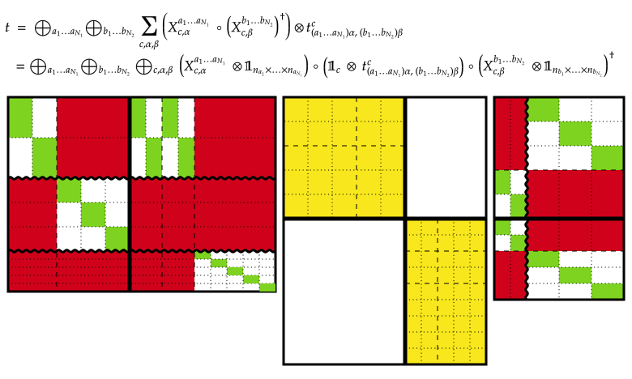
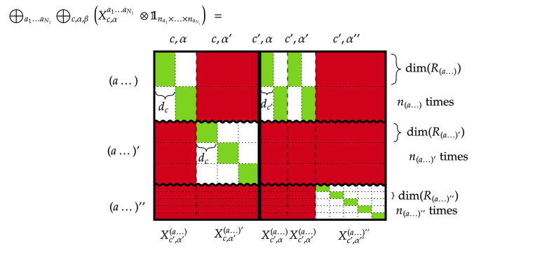
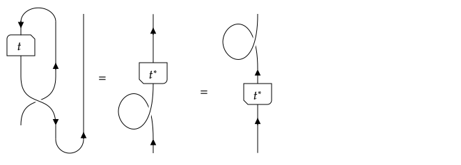

Tensors and the TensorMap type
This last page explains how to create and manipulate tensors in TensorKit.jl. As this is probably the most important part of the manual, we will also focus more strongly on the usage and interface, and less so on the underlying implementation. The only aspect of the implementation that we will address is the storage of the tensor data, as this is important to know how to create and initialize a tensor, but will in fact also shed light on how some of the methods work.
As mentioned, all tensors in TensorKit.jl are interpreted as linear maps (morphisms) from a domain (a ProductSpace{S,N₂}) to a codomain (another ProductSpace{S,N₁}), with the same S<:ElementarySpace that labels the type of spaces associated with the individual tensor indices. The overall type for all such tensor maps is AbstractTensorMap{S, N₁, N₂}. Note that we place information about the codomain before that of the domain. Indeed, we have already encountered the constructor for the concrete parametric type TensorMap in the form TensorMap(..., codomain, domain). This convention is opposite to the mathematical notation, e.g. $\mathrm{Hom}(W,V)$ or $f:W→V$, but originates from the fact that a normal matrix is also denoted as having size m × n or is constructed in Julia as Array(..., (m, n)), where the first integer m refers to the codomain being m- dimensional, and the seond integer n to the domain being n-dimensional. This also explains why we have consistently used the symbol $W$ for spaces in the domain and $V$ for spaces in the codomain. A tensor map $t:(W₁ ⊗ … ⊗ W_{N₂}) → (V₁ ⊗ … ⊗ V_{N₁})$ will be created in Julia as TensorMap(..., V1 ⊗ ... ⊗ VN₁, W1 ⊗ ... ⊗ WN2).
Furthermore, the abstract type AbstractTensor{S,N} is just a synonym for AbstractTensorMap{S,N,0}, i.e. for tensor maps with an empty domain, which is equivalent to the unit of the monoidal category, or thus, the field of scalars $𝕜$.
Currently, AbstractTensorMap has two subtypes. TensorMap provides the actual implementation, where the data of the tensor is stored in a DenseArray (more specifically a DenseMatrix as will be explained below). AdjointTensorMap is a simple wrapper type to denote the adjoint of an existing TensorMap object. In the future, additional types could be defined, to deal with sparse data, static data, diagonal data, etc...
Storage of tensor data
Before discussion how to construct and initalize a TensorMap{S}, let us discuss what is meant by 'tensor data' and how it can efficiently and compactly be stored. Let us first discuss the case sectortype(S) == Trivial sector, i.e. the case of no symmetries. In that case the data of a tensor t = TensorMap(..., V1 ⊗ ... ⊗ VN₁, W1 ⊗ ... ⊗ WN2) can just be represented as a multidimensional array of size
(dim(V1), dim(V2), …, dim(VN₁), dim(W1), …, dim(WN₂))
which can also be reshaped into matrix of size
(dim(V1)*dim(V2)*…*dim(VN₁), dim(W1)*dim(W2)*…*dim(WN₂))
and is really the matrix representation of the linear map that the tensor represents. In particular, given a second tensor t2 whose domain matches with the codomain of t, function composition amounts to multiplication of their corresponding data matrices. Similarly, tensor factorizations such as the singular value decomposition, which we discuss below, can act directly on this matrix representation.
One might wonder if it would not have been more natural to represent the tensor data as (dim(V1), dim(V2), …, dim(VN₁), dim(WN₂), …, dim(W1)) given how employing the duality naturally reverses the tensor product, as encountered with the interface of repartition for fusion trees. However, such a representation, when plainly reshaped to a matrix, would not have the above properties and would thus not constitute the matrix representation of the tensor in a compatible basis.
Now consider the case where sectortype(S) == I for some I which has FusionStyle(I) == UniqueFusion(), i.e. the representations of an Abelian group, e.g. I == Irrep[ℤ₂] or I == Irrep[U₁]. In this case, the tensor data is associated with sectors (a1, a2, …, aN₁) ∈ sectors(V1 ⊗ V2 ⊗ … ⊗ VN₁) and (b1, …, bN₂) ∈ sectors(W1 ⊗ … ⊗ WN₂) such that they fuse to a same common charge, i.e. (c = first(⊗(a1, …, aN₁))) == first(⊗(b1, …, bN₂)). The data associated with this takes the form of a multidimensional array with size (dim(V1, a1), …, dim(VN₁, aN₁), dim(W1, b1), …, dim(WN₂, bN₂)), or equivalently, a matrix of with row size dim(V1, a1)*…*dim(VN₁, aN₁) == dim(codomain, (a1, …, aN₁)) and column size dim(W1, b1)*…*dim(WN₂, aN₂) == dim(domain, (b1, …, bN₂)).
However, there are multiple combinations of (a1, …, aN₁) giving rise to the same c, and so there is data associated with all of these, as well as all possible combinations of (b1, …, bN₂). Stacking all matrices for different (a1,…) and a fixed value of (b1,…) underneath each other, and for fixed value of (a1,…) and different values of (b1,…) next to each other, gives rise to a larger block matrix of all data associated with the central sector c. The size of this matrix is exactly (blockdim(codomain, c), blockdim(domain, c)) and these matrices are exactly the diagonal blocks whose existence is guaranteed by Schur's lemma, and which are labeled by the coupled sector c. Indeed, if we would represent the tensor map t as a matrix without explicitly using the symmetries, we could reorder the rows and columns to group data corresponding to sectors that fuse to the same c, and the resulting block diagonal representation would emerge. This basis transform is thus a permutation, which is a unitary operation, that will cancel or go through trivially for linear algebra operations such as composing tensor maps (matrix multiplication) or tensor factorizations such as a singular value decomposition. For such linear algebra operations, we can thus directly act on these large matrices, which correspond to the diagonal blocks that emerge after a basis transform, provided that the partition of the tensor indices in domain and codomain of the tensor are in line with our needs. For example, composing two tensor maps amounts to multiplying the matrices corresponding to the same c (provided that its subblocks labeled by the different combinations of sectors are ordered in the same way, which we guarantee by associating a canonical order with sectors). Henceforth, we refer to the blocks of a tensor map as those diagonal blocks, the existence of which is provided by Schur's lemma and which are labeled by the coupled sectors c. We directly store these blocks as DenseMatrix and gather them as values in a dictionary, together with the corresponding coupled sector c as key. For a given tensor t, we can access a specific block as block(t, c), whereas blocks(t) yields an iterator over pairs c=>block(t,c).
The subblocks corresponding to a particular combination of sectors then correspond to a particular view for some range of the rows and some range of the colums, i.e. view(block(t, c), m₁:m₂, n₁:n₂) where the ranges m₁:m₂ associated with (a1, …, aN₁) and n₁:n₂ associated with (b₁, …, bN₂) are stored within the fields of the instance t of type TensorMap. This view can then lazily be reshaped to a multidimensional array, for which we rely on the package Strided.jl. Indeed, the data in this view is not contiguous, because the stride between the different columns is larger than the length of the columns. Nonetheless, this does not pose a problem and even as multidimensional array there is still a definite stride associated with each dimension.
When FusionStyle(I) isa MultipleFusion, things become slightly more complicated. Not only do (a1, …, aN₁) give rise to different coupled sectors c, there can be multiply ways in which they fuse to c. These different possibilities are enumerated by the iterator fusiontrees((a1, …, aN₁), c) and fusiontrees((b1, …, bN₂), c), and with each of those, there is tensor data that takes the form of a multidimensional array, or, after reshaping, a matrix of size (dim(codomain, (a1, …, aN₁)), dim(domain, (b1, …, bN₂)))). Again, we can stack all such matrices with the same value of f₁ ∈ fusiontrees((a1, …, aN₁), c) horizontally (as they all have the same number of rows), and with the same value of f₂ ∈ fusiontrees((b1, …, bN₂), c) vertically (as they have the same number of columns). What emerges is a large matrix of size (blockdim(codomain, c), blockdim(domain, c)) containing all the tensor data associated with the coupled sector c, where blockdim(P, c) = sum(dim(P, s)*length(fusiontrees(s, c)) for s in sectors(P)) for some instance P of ProductSpace. The tensor implementation does not distinguish between abelian or non-abelian sectors and still stores these matrices as a DenseMatrix, accessible via block(t, c).
At first sight, it might now be less clear what the relevance of this block is in relation to the full matrix representation of the tensor map, where the symmetry is not exploited. The essential interpretation is still the same. Schur's lemma now tells that there is a unitary basis transform which makes this matrix representation block diagonal, more specifically, of the form $⨁_{c} B_c ⊗ 𝟙_{c}$, where $B_c$ denotes block(t,c) and $𝟙_{c}$ is an identity matrix of size (dim(c), dim(c)). The reason for this extra identity is that the group representation is recoupled to act as $⨁_{c} 𝟙 ⊗ u_c(g)$ for all $g ∈ \mathsf{I}$, with $u_c(g)$ the matrix representation of group element $g$ according to the irrep $c$. In the abelian case, dim(c) == 1, i.e. all irreducible representations are one-dimensional and Schur's lemma only dictates that all off-diagonal blocks are zero. However, in this case the basis transform to the block diagonal representation is not simply a permutation matrix, but a more general unitary matrix composed of the different fusion trees. Indeed, let us denote the fusion trees f₁ ∈ fusiontrees((a1, …, aN₁), c) as $X^{a_1, …, a_{N₁}}_{c,α}$ where $α = (e_1, …, e_{N_1-2}; μ₁, …, μ_{N_1-1})$ is a collective label for the internal sectors e and the vertex degeneracy labels μ of a generic fusion tree, as discussed in the corresponding section. The tensor is then represented as

In this diagram, we have indicated how the tensor map can be rewritten in terms of a block diagonal matrix with a unitary matrix on its left and another unitary matrix (if domain and codomain are different) on its right. So the left and right matrices should actually have been drawn as squares. They represent the unitary basis transform. In this picture, red and white regions are zero. The center matrix is most easy to interpret. It is the block diagonal matrix $⨁_{c} B_c ⊗ 𝟙_{c}$ with diagonal blocks labeled by the coupled charge c, in this case it takes two values. Every single small square in between the dotted or dashed lines has size $d_c × d_c$ and corresponds to a single element of $B_c$, tensored with the identity $\mathrm{id}_c$. Instead of $B_c$, a more accurate labelling is $t^c_{(a_1 … a_{N₁})α, (b_1 … b_{N₂})β}$ where $α$ labels different fusion trees from $(a_1 … a_{N₁})$ to $c$. The dashed horizontal lines indicate regions corresponding to different fusion (actually splitting) trees, either because of different sectors $(a_1 … a_{N₁})$ or different labels $α$ within the same sector. Similarly, the dashed vertical lines define the border between regions of different fusion trees from the domain to c, either because of different sectors $(b_1 … b_{N₂})$ or a different label $β$.
To understand this better, we need to understand the basis transform, e.g. on the left (codomain) side. In more detail, it is given by

Indeed, remembering that $V_i = ⨁_{a_i} R_{a_i} ⊗ ℂ^{n_{a_i}}$ with $R_{a_i}$ the representation space on which irrep $a_i$ acts (with dimension $\mathrm{dim}(a_i)$), we find $V_1 ⊗ … ⊗ V_{N_1} = ⨁_{a_1, …, a_{N₁}} (R_{a_1} ⊗ … ⊗ R_{a_{N_1}}) ⊗ ℂ^{n_{a_1} × … n_{a_{N_1}}}$. In the diagram above, the wiggly lines correspond to the direct sum over the different sectors $(a_1, …, a_{N₁})$, there depicted taking three possible values $(a…)$, $(a…)′$ and $(a…)′′$. The tensor product $(R_{a_1} ⊗ … ⊗ R_{a_{N_1}}) ⊗ ℂ^{n_{a_1} × … n_{a_{N_1}}}$ is depicted as $(R_{a_1} ⊗ … ⊗ R_{a_{N_1}})^{⊕ n_{a_1} × … n_{a_{N_1}}}$, i.e. as a direct sum of the spaces $R_{(a…)} = (R_{a_1} ⊗ … ⊗ R_{a_{N_1}})$ according to the dotted horizontal lines, which repeat $n_{(a…)} = n_{a_1} × … n_{a_{N_1}}$ times. In this particular example, $n_{(a…)}=2$, $n_{(a…)'}=3$ and $n_{(a…)''}=5$. The thick vertical line represents the separation between the two different coupled sectors, denoted as $c$ and $c'$. Dashed vertical lines represent different ways of reaching the coupled sector, corresponding to different α. In this example, the first sector $(a…)$ has one fusion tree to $c$, labeled by $c,α$, and two fusion trees to $c'$, labeled by $c',α$ and $c',α'$. The second sector has only a fusion tree to $c$, labeled by $c,α'$. The third sector only has a fusion tree to $c'$, labeld by $c', α''$. Finally then, because the fusion trees do not act on the spaces $ℂ^{n_{a_1} × … n_{a_{N_1}}}$, the dotted lines which represent the different $n_{(a…)} = n_{a_1} × … n_{a_{N_1}}$ dimensions are also drawn vertically. In particular, for a given sector $(a…)$ and a specific fusion tree $X^{(a…)}_{c,α}: R_{(a…)}→R_c$, the action is $X^{(a…)}_{c,α} ⊗ 𝟙_{n_{(a…)}}$, which corresponds to the diagonal green blocks in this drawing where the same matrix $X^{(a…)}_{c,α}$ (the fusion tree) is repeated along the diagonal. Note that the fusion tree is not a vector or single column, but a matrix with number of rows equal to $\mathrm{dim}(R_{(a\ldots)}) = d_{a_1} d_{a_2} … d_{a_{N_1}}$ and number of columns equal to $d_c$. A similar interpretation can be given to the basis transform on the right, by taking its adjoint. In this particular example, it has two different combinations of sectors $(b…)$ and $(b…)'$, where both have a single fusion tree to $c$ as well as to $c'$, and $n_{(b…)}=2$, $n_{(b…)'}=3$.
Note that we never explicitly store or act with the basis transforms on the left and the right. For composing tensor maps (i.e. multiplying them), these basis transforms just cancel, whereas for tensor factorizations they just go through trivially. They transform non-trivially when reshuffling the tensor indices, both within or in between the domain and codomain. For this, however, we can completely rely on the manipulations of fusion trees to implicitly compute the effect of the basis transform and construct the new blocks $B_c$ that result with respect to the new basis.
Hence, as before, we only store the diagonal blocks $B_c$ of size (blockdim(codomain(t), c), blockdim(domain(t), c)) as a DenseMatrix, accessible via block(t, c). Within this matrix, there are regions of the form view(block(t, c), m₁:m₂, n₁:n₂) that correspond to the data $t^c_{(a_1 … a_{N₁})α, (b_1 … b_{N₂})β}$ associated with a pair of fusion trees $X^{(a_1 … a_{N₁})}_{c,α}$ and $X^{(b_1 … b_{N₂})}_{c,β}$, henceforth again denoted as f₁ and f₂, with f₁.coupled == f₂.coupled == c. The ranges where this subblock is living are managed within the tensor implementation, and these subblocks can be accessed via t[f₁,f₂], and is returned as a StridedArray of size $n_{a_1} × n_{a_2} × … × n_{a_{N_1}} × n_{b_1} × … n_{b_{N₂}}$, or in code, (dim(V1, a1), dim(V2, a2), …, dim(VN₁, aN₁), dim(W1, b1), …, dim(WN₂, bN₂)). While the implementation does not distinguish between FusionStyle isa UniqueFusion or FusionStyle isa MultipleFusion, in the former case the fusion tree is completely characterized by the uncoupled sectors, and so the subblocks can also be accessed as t[(a1, …, aN₁, b1, …, bN₂)]. When there is no symmetry at all, i.e. sectortype(t) == Trivial, t[] returns the raw tensor data as a StridedArray of size (dim(V1), …, dim(VN₁), dim(W1), …, dim(WN₂)), whereas block(t, Trivial()) returns the same data as a DenseMatrix of size (dim(V1) * … * dim(VN₁), dim(W1) * … * dim(WN₂)).
Constructing tensor maps and accessing tensor data
Having learned how a tensor is represented and stored, we can now discuss how to create tensors and tensor maps. From hereon, we focus purely on the interface rather than the implementation.
Random and uninitialized tensor maps
The most convenient set of constructors are those that construct tensors or tensor maps with random or uninitialized data. They take the form
f(codomain, domain = one(codomain))
f(eltype::Type{<:Number}, codomain, domain = one(codomain))
TensorMap(undef, codomain, domain = one(codomain))
TensorMap(undef, eltype::Type{<:Number}, codomain, domain = one(codomain))
Tensor(undef, codomain)
Tensor(undef, eltype::Type{<:Number}, codomain)Here, f is any of the typical functions from Base that normally create arrays, namely zeros, ones, rand, randn and Random.randexp. Remember that one(codomain) is the empty ProductSpace{S,0}(). The third and fourth calling syntax use the UndefInitializer from Julia Base and generates a TensorMap with unitialized data, which can thus contain NaNs.
In all of these constructors, the last two arguments can be replaced by domain→codomain or codomain←domain, where the arrows are obtained as \rightarrow+TAB and \leftarrow+TAB and create a HomSpace as explained in the section on Spaces of morphisms. Some examples are perhaps in order
julia> t1 = randn(ℂ^2 ⊗ ℂ^3, ℂ^2)TensorMap((ℂ^2 ⊗ ℂ^3) ← ℂ^2): [:, :, 1] = -0.23312659320907267 -1.198039012411446 1.4790410106028942 1.9585376924842102 -1.2309946991068061 -0.4449353098375463 [:, :, 2] = -0.46993847371741554 0.5029236893773528 -1.1205589736071757 0.3474404755694104 1.226505979617927 -0.1051846682446385julia> t2 = zeros(Float32, ℂ^2 ⊗ ℂ^3 ← ℂ^2)TensorMap((ℂ^2 ⊗ ℂ^3) ← ℂ^2): [:, :, 1] = 0.0f0 0.0f0 0.0f0 0.0f0 0.0f0 0.0f0 [:, :, 2] = 0.0f0 0.0f0 0.0f0 0.0f0 0.0f0 0.0f0julia> t3 = TensorMap(undef, ℂ^2 → ℂ^2 ⊗ ℂ^3)ERROR: MethodError: no method matching TensorMap(::UndefInitializer, ::TensorMapSpace{ComplexSpace, 2, 1}) The type `TensorMap` exists, but no method is defined for this combination of argument types when trying to construct it. Closest candidates are: TensorMap(::typeof(randn), ::HomSpace) @ TensorKit deprecated.jl:103 TensorMap(::typeof(randnormal), ::HomSpace) @ TensorKit deprecated.jl:103 TensorMap(::typeof(rand), ::HomSpace) @ TensorKit deprecated.jl:103 ...julia> domain(t1) == domain(t2) == domain(t3)ERROR: UndefVarError: `t3` not defined in `Main` Suggestion: check for spelling errors or missing imports.julia> codomain(t1) == codomain(t2) == codomain(t3)ERROR: UndefVarError: `t3` not defined in `Main` Suggestion: check for spelling errors or missing imports.julia> disp(x) = show(IOContext(Core.stdout, :compact=>false), "text/plain", trunc.(x; digits = 3));julia> t1[] |> disp2×3×2 StridedViews.StridedView{Float64, 3, Array{Float64, 3}, typeof(identity)}: [:, :, 1] = -0.233 -1.198 1.479 1.958 -1.23 -0.444 [:, :, 2] = -0.469 0.502 -1.12 0.347 1.226 -0.105julia> block(t1, Trivial()) |> disp6×2 Array{Float64, 2}: -0.233 -0.469 1.958 0.347 -1.198 0.502 -1.23 1.226 1.479 -1.12 -0.444 -0.105julia> reshape(t1[], dim(codomain(t1)), dim(domain(t1))) |> disp6×2 Array{Float64, 2}: -0.233 -0.469 1.958 0.347 -1.198 0.502 -1.23 1.226 1.479 -1.12 -0.444 -0.105
Finally, all constructors can also be replaced by Tensor(..., codomain), in which case the domain is assumed to be the empty ProductSpace{S,0}(), which can easily be obtained as one(codomain). Indeed, the empty product space is the unit object of the monoidal category, equivalent to the field of scalars 𝕜, and thus the multiplicative identity (especially since * also acts as tensor product on vector spaces).
The matrices created by f are the matrices $B_c$ discussed above, i.e. those returned by block(t, c). Only numerical matrices of type DenseMatrix are accepted, which in practice just means Julia's intrinsic Matrix{T} for some T<:Number. In the future, we will add support for CuMatrix from CuArrays.jl to harness GPU computing power, and maybe SharedArray from the Julia's SharedArrays standard library.
Support for static or sparse data is currently unavailable, and if it would be implemented, it would lead to new subtypes of AbstractTensorMap which are distinct from TensorMap. Future implementations of e.g. SparseTensorMap or StaticTensorMap could be useful. Furthermore, there could be specific implementations for tensors whose blocks are Diagonal.
Tensor maps from existing data
To create a TensorMap with existing data, one can use the aforementioned form but with the function f replaced with the actual data, i.e. TensorMap(data, codomain, domain) or any of its equivalents.
Here, data can be of two types. It can be a dictionary (any Associative subtype) which has blocksectors c of type sectortype(codomain) as keys, and the corresponding matrix blocks as value, i.e. data[c] is some DenseMatrix of size (blockdim(codomain, c), blockdim(domain, c)). This is the form of how the data is stored within the TensorMap objects.
For those space types for which a TensorMap can be converted to a plain multidimensional array, the data can also be a general DenseArray, either of rank N₁+N₂ and with matching size (dims(codomain)..., dims(domain)...), or just as a DenseMatrix with size (dim(codomain), dim(domain)). This is true in particular if the sector type is Trivial, e.g. for CartesianSpace or ComplexSpace. Then the data array is just reshaped into matrix form and referred to as such in the resulting TensorMap instance. When spacetype is GradedSpace, the TensorMap constructor will try to reconstruct the tensor data such that the resulting tensor t satisfies data == convert(Array, t). This might not be possible, if the data does not respect the symmetry structure. This procedure can be sketched using a simple physical example, namely the SWAP gate on two qubits,
\[\begin{align*} \mathrm{SWAP}: \mathbb{C}^2 \otimes \mathbb{C}^2 & \to \mathbb{C}^2 \otimes \mathbb{C}^2\\ |i\rangle \otimes |j\rangle &\mapsto |j\rangle \otimes |i\rangle. \end{align*}\]
This operator can be rewritten in terms of the familiar Heisenberg exchange interaction $\vec{S}_i \cdot \vec{S}_j$ as
\[\mathrm{SWAP} = 2 \vec{S}_i \cdot \vec{S}_j + \frac{1}{2} 𝟙,\]
where $\vec{S} = (S^x, S^y, S^z)$ and the spin-1/2 generators of SU₂ $S^k$ are defined defined in terms of the $2 \times 2$ Pauli matrices $\sigma^k$ as $S^k = \frac{1}{2}\sigma^k$. The SWAP gate can be realized as a rank-4 TensorMap in the following way:
julia> # encode the matrix elements of the swap gate into a rank-4 array, where the first two # indices correspond to the codomain and the last two indices correspond to the domain data = zeros(2,2,2,2) # the swap gate then maps the last two indices on the first two in reversed order2×2×2×2 Array{Float64, 4}: [:, :, 1, 1] = 0.0 0.0 0.0 0.0 [:, :, 2, 1] = 0.0 0.0 0.0 0.0 [:, :, 1, 2] = 0.0 0.0 0.0 0.0 [:, :, 2, 2] = 0.0 0.0 0.0 0.0julia> data[1,1,1,1] = data[2,2,2,2] = data[1,2,2,1] = data[2,1,1,2] = 11julia> V1 = ℂ^2 # generic qubit hilbert spaceℂ^2julia> t1 = TensorMap(data, V1 ⊗ V1, V1 ⊗ V1)TensorMap((ℂ^2 ⊗ ℂ^2) ← (ℂ^2 ⊗ ℂ^2)): [:, :, 1, 1] = 1.0 0.0 0.0 0.0 [:, :, 2, 1] = 0.0 1.0 0.0 0.0 [:, :, 1, 2] = 0.0 0.0 1.0 0.0 [:, :, 2, 2] = 0.0 0.0 0.0 1.0julia> V2 = SU2Space(1/2=>1) # hilbert space of an actual spin-1/2 particle, respecting symmetryRep[SU₂](1/2=>1)julia> t2 = TensorMap(data, V2 ⊗ V2, V2 ⊗ V2)TensorMap((Rep[SU₂](1/2=>1) ⊗ Rep[SU₂](1/2=>1)) ← (Rep[SU₂](1/2=>1) ⊗ Rep[SU₂](1/2=>1))): * Data for fusiontree FusionTree{Irrep[SU₂]}((1/2, 1/2), 0, (false, false), ()) ← FusionTree{Irrep[SU₂]}((1/2, 1/2), 0, (false, false), ()): [:, :, 1, 1] = -1.0000000000000002 * Data for fusiontree FusionTree{Irrep[SU₂]}((1/2, 1/2), 1, (false, false), ()) ← FusionTree{Irrep[SU₂]}((1/2, 1/2), 1, (false, false), ()): [:, :, 1, 1] = 1.0julia> V3 = U1Space(1/2=>1,-1/2=>1) # restricted space that only uses the `σ_z` rotation symmetryRep[U₁](1/2=>1, -1/2=>1)julia> t3 = TensorMap(data, V3 ⊗ V3, V3 ⊗ V3)TensorMap((Rep[U₁](1/2=>1, -1/2=>1) ⊗ Rep[U₁](1/2=>1, -1/2=>1)) ← (Rep[U₁](1/2=>1, -1/2=>1) ⊗ Rep[U₁](1/2=>1, -1/2=>1))): * Data for sector (Irrep[U₁](-1/2), Irrep[U₁](1/2)) ← (Irrep[U₁](-1/2), Irrep[U₁](1/2)): [:, :, 1, 1] = 0.0 * Data for sector (Irrep[U₁](1/2), Irrep[U₁](-1/2)) ← (Irrep[U₁](-1/2), Irrep[U₁](1/2)): [:, :, 1, 1] = 1.0 * Data for sector (Irrep[U₁](-1/2), Irrep[U₁](1/2)) ← (Irrep[U₁](1/2), Irrep[U₁](-1/2)): [:, :, 1, 1] = 1.0 * Data for sector (Irrep[U₁](1/2), Irrep[U₁](-1/2)) ← (Irrep[U₁](1/2), Irrep[U₁](-1/2)): [:, :, 1, 1] = 0.0 * Data for sector (Irrep[U₁](1/2), Irrep[U₁](1/2)) ← (Irrep[U₁](1/2), Irrep[U₁](1/2)): [:, :, 1, 1] = 1.0 * Data for sector (Irrep[U₁](-1/2), Irrep[U₁](-1/2)) ← (Irrep[U₁](-1/2), Irrep[U₁](-1/2)): [:, :, 1, 1] = 1.0julia> for (c,b) in blocks(t3) println("Data for block $c :") disp(b) println() endData for block Irrep[U₁](0) : 2×2 Array{Float64, 2}: 0.0 1.0 1.0 0.0 Data for block Irrep[U₁](1) : 1×1 Array{Float64, 2}: 1.0 Data for block Irrep[U₁](-1) : 1×1 Array{Float64, 2}: 1.0
Hence, we recognize that the exchange interaction has eigenvalue $-1$ in the coupled spin zero sector (SU2Irrep(0)), and eigenvalue $+1$ in the coupled spin 1 sector (SU2Irrep(1)). Using Irrep[U₁] instead, we observe that both coupled charge U1Irrep(+1) and U1Irrep(-1) have eigenvalue $+1$. The coupled charge U1Irrep(0) sector is two-dimensional, and has an eigenvalue $+1$ and an eigenvalue $-1$.
To construct the proper data in more complicated cases, one has to know where to find each sector in the range 1:dim(V) of every index i with associated space V, as well as the internal structure of the representation space when the corresponding sector c has dim(c)>1, i.e. in the case of FusionStyle(c) isa MultipleFusion. Currently, the only non- abelian sectors are Irrep[SU₂] and Irrep[CU₁], for which the internal structure is the natural one.
There are some tools available to facilitate finding the proper range of sector c in space V, namely axes(V, c). This also works on a ProductSpace, with a tuple of sectors. An example
julia> V = SU2Space(0=>3, 1=>2, 2=>1)Rep[SU₂](0=>3, 1=>2, 2=>1)julia> P = V ⊗ V ⊗ V(Rep[SU₂](0=>3, 1=>2, 2=>1) ⊗ Rep[SU₂](0=>3, 1=>2, 2=>1) ⊗ Rep[SU₂](0=>3, 1=>2, 2=>1))julia> axes(P, (SU2Irrep(1), SU2Irrep(0), SU2Irrep(2)))(4:9, 1:3, 10:14)
Note that the length of the range is the degeneracy dimension of that sector, times the dimension of the internal representation space, i.e. the quantum dimension of that sector.
Assigning block data after initialization
In order to avoid having to know the internal structure of each representation space to properly construct the full data array, it is often simpler to assign the block data directly after initializing an all zero TensorMap with the correct spaces. While this may seem more difficult at first sight since it requires knowing the exact entries associated to each valid combination of domain uncoupled sectors, coupled sector and codomain uncoupled sectors, this is often a far more natural procedure in practice.
A first option is to directly set the full matrix block for each coupled sector in the TensorMap. For the example with U₁ symmetry, this can be done as
julia> t4 = zeros(V3 ⊗ V3, V3 ⊗ V3);julia> block(t4, U1Irrep(0)) .= [1 0; 0 1];julia> block(t4, U1Irrep(1)) .= [1;;];julia> block(t4, U1Irrep(-1)) .= [1;;];julia> for (c, b) in blocks(t4) println("Data for block $c :") disp(b) println() endData for block Irrep[U₁](0) : 2×2 Array{Float64, 2}: 1.0 0.0 0.0 1.0 Data for block Irrep[U₁](1) : 1×1 Array{Float64, 2}: 1.0 Data for block Irrep[U₁](-1) : 1×1 Array{Float64, 2}: 1.0
While this indeed does not require considering the internal structure of the representation spaces, it still requires knowing the precise row and column indices corresponding to each set of uncoupled sectors in the codmain and domain respectively to correctly assign the nonzero entries in each block.
Perhaps the most natural way of constructing a particular TensorMap is to directly assign the data slices for each splitting - fusion tree pair using the fusiontrees(::TensorMap) method. This returns an iterator over all tuples (f₁, f₂) of splitting - fusion tree pairs corresponding to all ways in which the set of domain uncoupled sectors can fuse to a coupled sector and split back into the set of codomain uncoupled sectors. By directly setting the corresponding data slice t[f₁, f₂] of size (dims(codomain(t), f₁.uncoupled)..., dims(domain(t), f₂.uncoupled)...), we can construct all the block data without worrying about the internal ordering of row and column indices in each block. In addition, the corresponding value of each fusion tree slice is often directly informed by the object we are trying to construct in the first place. For example, in order to construct the Heisenberg exchange interaction on two spin-1/2 particles $i$ and $j$ as an SU₂ symmetric TensorMap, we can make use of the observation that
\[\vec{S}_i \cdot \vec{S}_j = \frac{1}{2} \left( \left( \vec{S}_i \cdot \vec{S}_j \right)^2 - \vec{S}_i^2 - \vec{S}_j^2 \right).\]
Recalling some basic group theory, we know that the quadratic Casimir of SU₂, $\vec{S}^2$, has a well-defined eigenvalue $j(j+1)$ on every irrep of spin $j$. From the above expressions, we can therefore directly read off the eigenvalues of the SWAP gate in terms of this Casimir eigenvalue on the domain uncoupled sectors and the coupled sector. This gives us exactly the prescription we need to assign the data slice corresponding to each splitting - fusion tree pair:
julia> C(s::SU2Irrep) = s.j * (s.j + 1)C (generic function with 1 method)julia> t5 = zeros(V2 ⊗ V2, V2 ⊗ V2);julia> for (f₁, f₂) in fusiontrees(t5) t5[f₁, f₂] .= C(f₂.coupled) - C(f₂.uncoupled[1]) - C(f₂.uncoupled[2]) + 1/2 endjulia> for (c, b) in blocks(t5) println("Data for block $c :") disp(b) println() endData for block Irrep[SU₂](0) : 1×1 Array{Float64, 2}: -1.0 Data for block Irrep[SU₂](1) : 1×1 Array{Float64, 2}: 1.0
Constructing similar tensors
A third way to construct a TensorMap instance is to use Base.similar, i.e.
similar(t [, T::Type{<:Number}, codomain, domain])where T is a possibly different eltype for the tensor data, and codomain and domain optionally define a new codomain and domain for the resulting tensor. By default, these values just take the value from the input tensor t. The result will be a new TensorMap instance, with undef data, but whose data is stored in the same subtype of DenseMatrix (e.g. Matrix or CuMatrix or ...) as t. In particular, this uses the methods storagetype(t) and TensorKit.similarstoragetype(t, T).
Special purpose constructors
Finally, there are methods zero, one, id, isomorphism, unitary and isometry to create specific new tensors. Tensor maps behave as vectors and can be added (if they have the same domain and codomain); zero(t) is the additive identity, i.e. a TensorMap instance where all entries are zero. For a t::TensorMap with domain(t) == codomain(t), i.e. an endomorphism, one(t) creates the identity tensor, i.e. the identity under composition. As discussed in the section on linear algebra operations, we denote composition of tensor maps with the mutliplication operator *, such that one(t) is the multiplicative identity. Similarly, it can be created as id(V) with V the relevant vector space, e.g. one(t) == id(domain(t)). The identity tensor is currently represented with dense data, and one can use id(A::Type{<:DenseMatrix}, V) to specify the type of DenseMatrix (and its eltype), e.g. A = Matrix{Float64}. Finally, it often occurs that we want to construct a specific isomorphism between two spaces that are isomorphic but not equal, and for which there is no canonical choice. Hereto, one can use the method u = isomorphism([A::Type{<:DenseMatrix}, ] codomain, domain), which will explicitly check that the domain and codomain are isomorphic, and return an error otherwise. Again, an optional first argument can be given to specify the specific type of DenseMatrix that is currently used to store the rather trivial data of this tensor. If InnerProductStyle(u) <: EuclideanProduct, the same result can be obtained with the method u = unitary([A::Type{<:DenseMatrix}, ] codomain, domain). Note that reversing the domain and codomain yields the inverse morphism, which in the case of EuclideanProduct coincides with the adjoint morphism, i.e. isomorphism(A, domain, codomain) == adjoint(u) == inv(u), where inv and adjoint will be further discussed below. Finally, if two spaces V1 and V2 are such that V2 can be embedded in V1, i.e. there exists an inclusion with a left inverse, and furthermore they represent tensor products of some ElementarySpace with EuclideanProduct, the function w = isometry([A::Type{<:DenseMatrix}, ], V1, V2) creates one specific isometric embedding, such that adjoint(w) * w == id(V2) and w * adjoint(w) is some hermitian idempotent (a.k.a. orthogonal projector) acting on V1. An error will be thrown if such a map cannot be constructed for the given domain and codomain.
Let's conclude this section with some examples with GradedSpace.
julia> V1 = ℤ₂Space(0=>3,1=>2)Rep[ℤ₂](0=>3, 1=>2)julia> V2 = ℤ₂Space(0=>2,1=>1) # First a `TensorMap{ℤ₂Space, 1, 1}`Rep[ℤ₂](0=>2, 1=>1)julia> m = randn(V1, V2)TensorMap(Rep[ℤ₂](0=>3, 1=>2) ← Rep[ℤ₂](0=>2, 1=>1)): * Data for sector (Irrep[ℤ₂](0),) ← (Irrep[ℤ₂](0),): -0.4492534695932364 -0.3566975175740316 0.5015340306214946 -0.7186334352978022 0.6943942191249728 -0.5858095470858309 * Data for sector (Irrep[ℤ₂](1),) ← (Irrep[ℤ₂](1),): 0.18090637373075916 -2.2238968775833925julia> convert(Array, m) |> disp # compare with:5×3 Array{Float64, 2}: -0.449 -0.356 0.0 0.501 -0.718 0.0 0.694 -0.585 0.0 0.0 0.0 0.18 0.0 0.0 -2.223julia> block(m, Irrep[ℤ₂](0)) |> disp3×2 Array{Float64, 2}: -0.449 -0.356 0.501 -0.718 0.694 -0.585julia> block(m, Irrep[ℤ₂](1)) |> disp # Now a `TensorMap{ℤ₂Space, 2, 2}`2×1 Array{Float64, 2}: 0.18 -2.223julia> t = randn(V1 ⊗ V1, V2 ⊗ V2')TensorMap((Rep[ℤ₂](0=>3, 1=>2) ⊗ Rep[ℤ₂](0=>3, 1=>2)) ← (Rep[ℤ₂](0=>2, 1=>1) ⊗ Rep[ℤ₂](0=>2, 1=>1)')): * Data for sector (Irrep[ℤ₂](0), Irrep[ℤ₂](0)) ← (Irrep[ℤ₂](0), Irrep[ℤ₂](0)): [:, :, 1, 1] = 0.39795865748087655 0.49147782082693986 -0.17604589380015018 -1.750846740036233 0.375761185518522 3.4937808457354294 -1.7453974798721699 0.6863547830235054 0.24511803381133454 [:, :, 2, 1] = -0.46667193675973123 0.033074828533837544 -0.06879305246367379 0.20375094242138034 0.6594089653766374 -1.193640625842037 0.8708793989557616 1.3228795631908241 -0.03442402749336696 [:, :, 1, 2] = 0.3395609371693471 -0.02429458390599965 -0.257175675495163 0.004110534945361013 1.2244947242024822 -0.8882769930949109 -0.2526618433476534 -1.3126212354121993 -0.8128775087333775 [:, :, 2, 2] = -1.6154974492241385 0.7132844910744373 -0.08419111603576235 -0.5320896293116746 -0.6760270083240227 0.9162598607331892 -0.15311872190429313 -1.2140580326678867 -0.5579052338799733 * Data for sector (Irrep[ℤ₂](1), Irrep[ℤ₂](1)) ← (Irrep[ℤ₂](0), Irrep[ℤ₂](0)): [:, :, 1, 1] = -0.17615588569936436 -0.7505243777311931 -0.9585543722751554 -0.45462977453682596 [:, :, 2, 1] = 1.3975893100799421 -0.621320784203746 -0.1557430611081074 1.2710164369065127 [:, :, 1, 2] = 0.46391684635203695 -0.4830532239640747 0.8545860788545722 -0.4445342308313436 [:, :, 2, 2] = -1.0601209579760147 -0.08901304430778624 0.27931646003590754 0.4207891733094343 * Data for sector (Irrep[ℤ₂](0), Irrep[ℤ₂](0)) ← (Irrep[ℤ₂](1), Irrep[ℤ₂](1)): [:, :, 1, 1] = 0.16740585440011088 1.1905698872410626 -0.2064378010967403 -0.9351440932110024 -2.2988685442547228 -1.1433250947599203 0.5384109267845039 -0.4406191164015694 -1.1175714395179155 * Data for sector (Irrep[ℤ₂](1), Irrep[ℤ₂](1)) ← (Irrep[ℤ₂](1), Irrep[ℤ₂](1)): [:, :, 1, 1] = 0.3364553653498064 0.698683742279107 0.27173897464826197 1.562657390322753 * Data for sector (Irrep[ℤ₂](1), Irrep[ℤ₂](0)) ← (Irrep[ℤ₂](1), Irrep[ℤ₂](0)): [:, :, 1, 1] = -0.8299091361001026 0.6421282202492329 -0.3622239544624308 1.219377319748407 -0.9389726362758026 2.2524508121486253 [:, :, 1, 2] = -0.9294289678234549 0.47658007390391643 -0.3502747651527508 1.1170108889855763 0.28318602951534255 0.4483012999875787 * Data for sector (Irrep[ℤ₂](0), Irrep[ℤ₂](1)) ← (Irrep[ℤ₂](1), Irrep[ℤ₂](0)): [:, :, 1, 1] = 1.2657756070079054 0.9821694649738418 1.6883682171740284 0.6182506154345186 -0.043978088780431086 -1.1129165279282822 [:, :, 1, 2] = -0.05098955151351023 0.21760194614664266 -0.5535770841762061 1.2434711385516808 0.2822147635545271 -0.8884475904688922 * Data for sector (Irrep[ℤ₂](1), Irrep[ℤ₂](0)) ← (Irrep[ℤ₂](0), Irrep[ℤ₂](1)): [:, :, 1, 1] = 0.8211396277741745 -1.440816855540865 -0.12152759724731799 0.46604123247019025 0.38859705832402347 -1.2148144693419576 [:, :, 2, 1] = -0.11236071452574214 -0.3094165896506022 -0.8660950341883799 -1.6036248925097356 0.2185899772627614 0.7846459814970966 * Data for sector (Irrep[ℤ₂](0), Irrep[ℤ₂](1)) ← (Irrep[ℤ₂](0), Irrep[ℤ₂](1)): [:, :, 1, 1] = -0.2626368825143883 -0.42577231074367416 -0.7998817220226699 -1.19712530185748 0.05933669210628672 -0.22516961690653542 [:, :, 2, 1] = 0.7551138949826495 -0.3725079915987416 0.09682429883030251 -0.3203730387124291 -0.3613553071719859 0.05734998362763561julia> (array = convert(Array, t)) |> disp5×5×3×3 Array{Float64, 4}: [:, :, 1, 1] = 0.397 0.491 -0.176 0.0 0.0 -1.75 0.375 3.493 0.0 0.0 -1.745 0.686 0.245 0.0 0.0 0.0 0.0 0.0 -0.176 -0.75 0.0 0.0 0.0 -0.958 -0.454 [:, :, 2, 1] = -0.466 0.033 -0.068 0.0 0.0 0.203 0.659 -1.193 0.0 0.0 0.87 1.322 -0.034 0.0 0.0 0.0 0.0 0.0 1.397 -0.621 0.0 0.0 0.0 -0.155 1.271 [:, :, 3, 1] = 0.0 0.0 0.0 1.265 0.982 0.0 0.0 0.0 1.688 0.618 0.0 0.0 0.0 -0.043 -1.112 -0.829 0.642 -0.362 0.0 0.0 1.219 -0.938 2.252 0.0 0.0 [:, :, 1, 2] = 0.339 -0.024 -0.257 0.0 0.0 0.004 1.224 -0.888 0.0 0.0 -0.252 -1.312 -0.812 0.0 0.0 0.0 0.0 0.0 0.463 -0.483 0.0 0.0 0.0 0.854 -0.444 [:, :, 2, 2] = -1.615 0.713 -0.084 0.0 0.0 -0.532 -0.676 0.916 0.0 0.0 -0.153 -1.214 -0.557 0.0 0.0 0.0 0.0 0.0 -1.06 -0.089 0.0 0.0 0.0 0.279 0.42 [:, :, 3, 2] = 0.0 0.0 0.0 -0.05 0.217 0.0 0.0 0.0 -0.553 1.243 0.0 0.0 0.0 0.282 -0.888 -0.929 0.476 -0.35 0.0 0.0 1.117 0.283 0.448 0.0 0.0 [:, :, 1, 3] = 0.0 0.0 0.0 -0.262 -0.425 0.0 0.0 0.0 -0.799 -1.197 0.0 0.0 0.0 0.059 -0.225 0.821 -1.44 -0.121 0.0 0.0 0.466 0.388 -1.214 0.0 0.0 [:, :, 2, 3] = 0.0 0.0 0.0 0.755 -0.372 0.0 0.0 0.0 0.096 -0.32 0.0 0.0 0.0 -0.361 0.057 -0.112 -0.309 -0.866 0.0 0.0 -1.603 0.218 0.784 0.0 0.0 [:, :, 3, 3] = 0.167 1.19 -0.206 0.0 0.0 -0.935 -2.298 -1.143 0.0 0.0 0.538 -0.44 -1.117 0.0 0.0 0.0 0.0 0.0 0.336 0.698 0.0 0.0 0.0 0.271 1.562julia> d1 = dim(codomain(t))25julia> d2 = dim(domain(t))9julia> (matrix = reshape(array, d1, d2)) |> disp25×9 Array{Float64, 2}: 0.397 -0.466 0.0 0.339 -1.615 0.0 0.0 0.0 0.167 -1.75 0.203 0.0 0.004 -0.532 0.0 0.0 0.0 -0.935 -1.745 0.87 0.0 -0.252 -0.153 0.0 0.0 0.0 0.538 0.0 0.0 -0.829 0.0 0.0 -0.929 0.821 -0.112 0.0 0.0 0.0 1.219 0.0 0.0 1.117 0.466 -1.603 0.0 0.491 0.033 0.0 -0.024 0.713 0.0 0.0 0.0 1.19 0.375 0.659 0.0 1.224 -0.676 0.0 0.0 0.0 -2.298 0.686 1.322 0.0 -1.312 -1.214 0.0 0.0 0.0 -0.44 0.0 0.0 0.642 0.0 0.0 0.476 -1.44 -0.309 0.0 0.0 0.0 -0.938 0.0 0.0 0.283 0.388 0.218 0.0 -0.176 -0.068 0.0 -0.257 -0.084 0.0 0.0 0.0 -0.206 3.493 -1.193 0.0 -0.888 0.916 0.0 0.0 0.0 -1.143 0.245 -0.034 0.0 -0.812 -0.557 0.0 0.0 0.0 -1.117 0.0 0.0 -0.362 0.0 0.0 -0.35 -0.121 -0.866 0.0 0.0 0.0 2.252 0.0 0.0 0.448 -1.214 0.784 0.0 0.0 0.0 1.265 0.0 0.0 -0.05 -0.262 0.755 0.0 0.0 0.0 1.688 0.0 0.0 -0.553 -0.799 0.096 0.0 0.0 0.0 -0.043 0.0 0.0 0.282 0.059 -0.361 0.0 -0.176 1.397 0.0 0.463 -1.06 0.0 0.0 0.0 0.336 -0.958 -0.155 0.0 0.854 0.279 0.0 0.0 0.0 0.271 0.0 0.0 0.982 0.0 0.0 0.217 -0.425 -0.372 0.0 0.0 0.0 0.618 0.0 0.0 1.243 -1.197 -0.32 0.0 0.0 0.0 -1.112 0.0 0.0 -0.888 -0.225 0.057 0.0 -0.75 -0.621 0.0 -0.483 -0.089 0.0 0.0 0.0 0.698 -0.454 1.271 0.0 -0.444 0.42 0.0 0.0 0.0 1.562julia> (u = reshape(convert(Array, unitary(codomain(t), fuse(codomain(t)))), d1, d1)) |> disp25×25 Array{Float64, 2}: 1.0 0.0 0.0 0.0 0.0 0.0 0.0 0.0 0.0 0.0 0.0 0.0 0.0 0.0 0.0 0.0 0.0 0.0 0.0 0.0 0.0 0.0 0.0 0.0 0.0 0.0 1.0 0.0 0.0 0.0 0.0 0.0 0.0 0.0 0.0 0.0 0.0 0.0 0.0 0.0 0.0 0.0 0.0 0.0 0.0 0.0 0.0 0.0 0.0 0.0 0.0 0.0 1.0 0.0 0.0 0.0 0.0 0.0 0.0 0.0 0.0 0.0 0.0 0.0 0.0 0.0 0.0 0.0 0.0 0.0 0.0 0.0 0.0 0.0 0.0 0.0 0.0 0.0 0.0 0.0 0.0 0.0 0.0 0.0 0.0 0.0 0.0 0.0 1.0 0.0 0.0 0.0 0.0 0.0 0.0 0.0 0.0 0.0 0.0 0.0 0.0 0.0 0.0 0.0 0.0 0.0 0.0 0.0 0.0 0.0 0.0 0.0 0.0 0.0 1.0 0.0 0.0 0.0 0.0 0.0 0.0 0.0 0.0 0.0 0.0 0.0 0.0 0.0 1.0 0.0 0.0 0.0 0.0 0.0 0.0 0.0 0.0 0.0 0.0 0.0 0.0 0.0 0.0 0.0 0.0 0.0 0.0 0.0 0.0 0.0 0.0 0.0 0.0 0.0 1.0 0.0 0.0 0.0 0.0 0.0 0.0 0.0 0.0 0.0 0.0 0.0 0.0 0.0 0.0 0.0 0.0 0.0 0.0 0.0 0.0 0.0 0.0 0.0 0.0 0.0 1.0 0.0 0.0 0.0 0.0 0.0 0.0 0.0 0.0 0.0 0.0 0.0 0.0 0.0 0.0 0.0 0.0 0.0 0.0 0.0 0.0 0.0 0.0 0.0 0.0 0.0 0.0 0.0 0.0 0.0 0.0 0.0 0.0 0.0 0.0 1.0 0.0 0.0 0.0 0.0 0.0 0.0 0.0 0.0 0.0 0.0 0.0 0.0 0.0 0.0 0.0 0.0 0.0 0.0 0.0 0.0 0.0 0.0 0.0 0.0 0.0 1.0 0.0 0.0 0.0 0.0 0.0 0.0 0.0 0.0 0.0 0.0 0.0 0.0 0.0 0.0 1.0 0.0 0.0 0.0 0.0 0.0 0.0 0.0 0.0 0.0 0.0 0.0 0.0 0.0 0.0 0.0 0.0 0.0 0.0 0.0 0.0 0.0 0.0 0.0 0.0 0.0 1.0 0.0 0.0 0.0 0.0 0.0 0.0 0.0 0.0 0.0 0.0 0.0 0.0 0.0 0.0 0.0 0.0 0.0 0.0 0.0 0.0 0.0 0.0 0.0 0.0 0.0 1.0 0.0 0.0 0.0 0.0 0.0 0.0 0.0 0.0 0.0 0.0 0.0 0.0 0.0 0.0 0.0 0.0 0.0 0.0 0.0 0.0 0.0 0.0 0.0 0.0 0.0 0.0 0.0 0.0 0.0 0.0 0.0 0.0 0.0 1.0 0.0 0.0 0.0 0.0 0.0 0.0 0.0 0.0 0.0 0.0 0.0 0.0 0.0 0.0 0.0 0.0 0.0 0.0 0.0 0.0 0.0 0.0 0.0 0.0 0.0 1.0 0.0 0.0 0.0 0.0 0.0 0.0 0.0 0.0 0.0 0.0 0.0 0.0 0.0 0.0 0.0 0.0 0.0 0.0 0.0 0.0 0.0 0.0 0.0 0.0 0.0 1.0 0.0 0.0 0.0 0.0 0.0 0.0 0.0 0.0 0.0 0.0 0.0 0.0 0.0 0.0 0.0 0.0 0.0 0.0 0.0 0.0 0.0 0.0 0.0 0.0 0.0 1.0 0.0 0.0 0.0 0.0 0.0 0.0 0.0 0.0 0.0 0.0 0.0 0.0 0.0 0.0 0.0 0.0 0.0 0.0 0.0 0.0 0.0 0.0 0.0 0.0 0.0 1.0 0.0 0.0 0.0 0.0 0.0 0.0 0.0 0.0 0.0 0.0 0.0 0.0 1.0 0.0 0.0 0.0 0.0 0.0 0.0 0.0 0.0 0.0 0.0 0.0 0.0 0.0 0.0 0.0 0.0 0.0 0.0 0.0 0.0 0.0 0.0 0.0 0.0 0.0 1.0 0.0 0.0 0.0 0.0 0.0 0.0 0.0 0.0 0.0 0.0 0.0 0.0 0.0 0.0 0.0 0.0 0.0 0.0 0.0 0.0 0.0 0.0 0.0 0.0 0.0 0.0 0.0 0.0 0.0 0.0 0.0 0.0 0.0 0.0 0.0 0.0 1.0 0.0 0.0 0.0 0.0 0.0 0.0 0.0 0.0 0.0 0.0 0.0 0.0 0.0 0.0 0.0 0.0 0.0 0.0 0.0 0.0 0.0 0.0 0.0 0.0 0.0 1.0 0.0 0.0 0.0 0.0 0.0 0.0 0.0 0.0 0.0 0.0 0.0 0.0 0.0 0.0 0.0 0.0 0.0 0.0 0.0 0.0 0.0 0.0 0.0 0.0 0.0 1.0 0.0 0.0 0.0 0.0 0.0 0.0 0.0 0.0 0.0 0.0 0.0 1.0 0.0 0.0 0.0 0.0 0.0 0.0 0.0 0.0 0.0 0.0 0.0 0.0 0.0 0.0 0.0 0.0 0.0 0.0 0.0 0.0 0.0 0.0 0.0 0.0 0.0 1.0 0.0 0.0 0.0 0.0 0.0 0.0 0.0 0.0 0.0 0.0 0.0 0.0julia> (v = reshape(convert(Array, unitary(domain(t), fuse(domain(t)))), d2, d2)) |> disp9×9 Array{Float64, 2}: 1.0 0.0 0.0 0.0 0.0 0.0 0.0 0.0 0.0 0.0 1.0 0.0 0.0 0.0 0.0 0.0 0.0 0.0 0.0 0.0 0.0 0.0 0.0 1.0 0.0 0.0 0.0 0.0 0.0 1.0 0.0 0.0 0.0 0.0 0.0 0.0 0.0 0.0 0.0 1.0 0.0 0.0 0.0 0.0 0.0 0.0 0.0 0.0 0.0 0.0 0.0 1.0 0.0 0.0 0.0 0.0 0.0 0.0 0.0 0.0 0.0 1.0 0.0 0.0 0.0 0.0 0.0 0.0 0.0 0.0 0.0 1.0 0.0 0.0 0.0 0.0 1.0 0.0 0.0 0.0 0.0julia> u'*u ≈ I ≈ v'*vtruejulia> (u'*matrix*v) |> disp # compare with:25×9 Array{Float64, 2}: 0.397 -0.466 0.339 -1.615 0.167 0.0 0.0 0.0 0.0 -1.75 0.203 0.004 -0.532 -0.935 0.0 0.0 0.0 0.0 -1.745 0.87 -0.252 -0.153 0.538 0.0 0.0 0.0 0.0 0.491 0.033 -0.024 0.713 1.19 0.0 0.0 0.0 0.0 0.375 0.659 1.224 -0.676 -2.298 0.0 0.0 0.0 0.0 0.686 1.322 -1.312 -1.214 -0.44 0.0 0.0 0.0 0.0 -0.176 -0.068 -0.257 -0.084 -0.206 0.0 0.0 0.0 0.0 3.493 -1.193 -0.888 0.916 -1.143 0.0 0.0 0.0 0.0 0.245 -0.034 -0.812 -0.557 -1.117 0.0 0.0 0.0 0.0 -0.176 1.397 0.463 -1.06 0.336 0.0 0.0 0.0 0.0 -0.958 -0.155 0.854 0.279 0.271 0.0 0.0 0.0 0.0 -0.75 -0.621 -0.483 -0.089 0.698 0.0 0.0 0.0 0.0 -0.454 1.271 -0.444 0.42 1.562 0.0 0.0 0.0 0.0 0.0 0.0 0.0 0.0 0.0 -0.829 -0.929 0.821 -0.112 0.0 0.0 0.0 0.0 0.0 1.219 1.117 0.466 -1.603 0.0 0.0 0.0 0.0 0.0 0.642 0.476 -1.44 -0.309 0.0 0.0 0.0 0.0 0.0 -0.938 0.283 0.388 0.218 0.0 0.0 0.0 0.0 0.0 -0.362 -0.35 -0.121 -0.866 0.0 0.0 0.0 0.0 0.0 2.252 0.448 -1.214 0.784 0.0 0.0 0.0 0.0 0.0 1.265 -0.05 -0.262 0.755 0.0 0.0 0.0 0.0 0.0 1.688 -0.553 -0.799 0.096 0.0 0.0 0.0 0.0 0.0 -0.043 0.282 0.059 -0.361 0.0 0.0 0.0 0.0 0.0 0.982 0.217 -0.425 -0.372 0.0 0.0 0.0 0.0 0.0 0.618 1.243 -1.197 -0.32 0.0 0.0 0.0 0.0 0.0 -1.112 -0.888 -0.225 0.057julia> block(t, Z2Irrep(0)) |> disp13×5 Array{Float64, 2}: 0.397 -0.466 0.339 -1.615 0.167 -1.75 0.203 0.004 -0.532 -0.935 -1.745 0.87 -0.252 -0.153 0.538 0.491 0.033 -0.024 0.713 1.19 0.375 0.659 1.224 -0.676 -2.298 0.686 1.322 -1.312 -1.214 -0.44 -0.176 -0.068 -0.257 -0.084 -0.206 3.493 -1.193 -0.888 0.916 -1.143 0.245 -0.034 -0.812 -0.557 -1.117 -0.176 1.397 0.463 -1.06 0.336 -0.958 -0.155 0.854 0.279 0.271 -0.75 -0.621 -0.483 -0.089 0.698 -0.454 1.271 -0.444 0.42 1.562julia> block(t, Z2Irrep(1)) |> disp12×4 Array{Float64, 2}: -0.829 -0.929 0.821 -0.112 1.219 1.117 0.466 -1.603 0.642 0.476 -1.44 -0.309 -0.938 0.283 0.388 0.218 -0.362 -0.35 -0.121 -0.866 2.252 0.448 -1.214 0.784 1.265 -0.05 -0.262 0.755 1.688 -0.553 -0.799 0.096 -0.043 0.282 0.059 -0.361 0.982 0.217 -0.425 -0.372 0.618 1.243 -1.197 -0.32 -1.112 -0.888 -0.225 0.057
Here, we illustrated some additional concepts. Firstly, note that we convert a TensorMap to an Array. This only works when sectortype(t) supports fusiontensor, and in particular when BraidingStyle(sectortype(t)) == Bosonic(), e.g. the case of trivial tensors (the category $\mathbf{Vect}$) and group representations (the category $\mathbf{Rep}_{\mathsf{G}}$, which can be interpreted as a subcategory of $\mathbf{Vect}$). Here, we are in this case with $\mathsf{G} = ℤ₂$. For a TensorMap{S,1,1}, the blocks directly correspond to the diagonal blocks in the block diagonal structure of its representation as an Array, there is no basis transform in between. This is no longer the case for TensorMap{S,N₁,N₂} with different values of N₁ and N₂. Here, we use the operation fuse(V), which creates an ElementarySpace which is isomorphic to a given space V (of type ProductSpace or ElementarySpace). The specific map between those two spaces constructed using the specific method unitary implements precisely the basis change from the product basis to the coupled basis. In this case, for a group G with FusionStyle(Irrep[G]) isa UniqueFusion, it is a permutation matrix. Specifically choosing V equal to the codomain and domain of t, we can construct the explicit basis transforms that bring t into block diagonal form.
Let's repeat the same exercise for I = Irrep[SU₂], which has FusionStyle(I) isa MultipleFusion.
julia> V1 = SU₂Space(0=>2,1=>1)Rep[SU₂](0=>2, 1=>1)julia> V2 = SU₂Space(0=>1,1=>1) # First a `TensorMap{SU₂Space, 1, 1}`Rep[SU₂](0=>1, 1=>1)julia> m = randn(V1, V2)TensorMap(Rep[SU₂](0=>2, 1=>1) ← Rep[SU₂](0=>1, 1=>1)): * Data for fusiontree FusionTree{Irrep[SU₂]}((0,), 0, (false,), ()) ← FusionTree{Irrep[SU₂]}((0,), 0, (false,), ()): -1.2487784467316776 -0.8376103170012155 * Data for fusiontree FusionTree{Irrep[SU₂]}((1,), 1, (false,), ()) ← FusionTree{Irrep[SU₂]}((1,), 1, (false,), ()): -0.793889625685231julia> convert(Array, m) |> disp # compare with:5×4 Array{Float64, 2}: -1.248 0.0 0.0 0.0 -0.837 0.0 0.0 0.0 0.0 -0.793 0.0 0.0 0.0 0.0 -0.793 0.0 0.0 0.0 0.0 -0.793julia> block(m, Irrep[SU₂](0)) |> disp2×1 Array{Float64, 2}: -1.248 -0.837julia> block(m, Irrep[SU₂](1)) |> disp # Now a `TensorMap{SU₂Space, 2, 2}`1×1 Array{Float64, 2}: -0.793julia> t = randn(V1 ⊗ V1, V2 ⊗ V2')TensorMap((Rep[SU₂](0=>2, 1=>1) ⊗ Rep[SU₂](0=>2, 1=>1)) ← (Rep[SU₂](0=>1, 1=>1) ⊗ Rep[SU₂](0=>1, 1=>1)')): * Data for fusiontree FusionTree{Irrep[SU₂]}((0, 0), 0, (false, false), ()) ← FusionTree{Irrep[SU₂]}((0, 0), 0, (false, true), ()): [:, :, 1, 1] = -0.6564311072637536 0.40188331947798783 0.1643227613307773 0.030218800182756248 * Data for fusiontree FusionTree{Irrep[SU₂]}((1, 1), 0, (false, false), ()) ← FusionTree{Irrep[SU₂]}((0, 0), 0, (false, true), ()): [:, :, 1, 1] = 0.45104175289216863 * Data for fusiontree FusionTree{Irrep[SU₂]}((0, 0), 0, (false, false), ()) ← FusionTree{Irrep[SU₂]}((1, 1), 0, (false, true), ()): [:, :, 1, 1] = -1.1291409713973741 -1.410695264346251 0.05309630701614085 0.43237885896012185 * Data for fusiontree FusionTree{Irrep[SU₂]}((1, 1), 0, (false, false), ()) ← FusionTree{Irrep[SU₂]}((1, 1), 0, (false, true), ()): [:, :, 1, 1] = -0.007975825977566341 * Data for fusiontree FusionTree{Irrep[SU₂]}((1, 0), 1, (false, false), ()) ← FusionTree{Irrep[SU₂]}((1, 0), 1, (false, true), ()): [:, :, 1, 1] = 0.6120320493757018 0.22416725062348714 * Data for fusiontree FusionTree{Irrep[SU₂]}((0, 1), 1, (false, false), ()) ← FusionTree{Irrep[SU₂]}((1, 0), 1, (false, true), ()): [:, :, 1, 1] = 1.5664011651164056 -0.8085349251837304 * Data for fusiontree FusionTree{Irrep[SU₂]}((1, 1), 1, (false, false), ()) ← FusionTree{Irrep[SU₂]}((1, 0), 1, (false, true), ()): [:, :, 1, 1] = 0.936713920239021 * Data for fusiontree FusionTree{Irrep[SU₂]}((1, 0), 1, (false, false), ()) ← FusionTree{Irrep[SU₂]}((0, 1), 1, (false, true), ()): [:, :, 1, 1] = 0.7343152756897502 0.38608319934119834 * Data for fusiontree FusionTree{Irrep[SU₂]}((0, 1), 1, (false, false), ()) ← FusionTree{Irrep[SU₂]}((0, 1), 1, (false, true), ()): [:, :, 1, 1] = 0.46553872897583176 0.5489774548603268 * Data for fusiontree FusionTree{Irrep[SU₂]}((1, 1), 1, (false, false), ()) ← FusionTree{Irrep[SU₂]}((0, 1), 1, (false, true), ()): [:, :, 1, 1] = 0.6092268075845186 * Data for fusiontree FusionTree{Irrep[SU₂]}((1, 0), 1, (false, false), ()) ← FusionTree{Irrep[SU₂]}((1, 1), 1, (false, true), ()): [:, :, 1, 1] = -0.12410443089283055 1.730279014284442 * Data for fusiontree FusionTree{Irrep[SU₂]}((0, 1), 1, (false, false), ()) ← FusionTree{Irrep[SU₂]}((1, 1), 1, (false, true), ()): [:, :, 1, 1] = -0.3237265375170499 0.10475003231900681 * Data for fusiontree FusionTree{Irrep[SU₂]}((1, 1), 1, (false, false), ()) ← FusionTree{Irrep[SU₂]}((1, 1), 1, (false, true), ()): [:, :, 1, 1] = -1.4454338439298051 * Data for fusiontree FusionTree{Irrep[SU₂]}((1, 1), 2, (false, false), ()) ← FusionTree{Irrep[SU₂]}((1, 1), 2, (false, true), ()): [:, :, 1, 1] = -0.5001847718626219julia> (array = convert(Array, t)) |> disp5×5×4×4 Array{Float64, 4}: [:, :, 1, 1] = -0.656 0.401 0.0 0.0 0.0 0.164 0.03 0.0 0.0 0.0 0.0 0.0 0.0 0.0 0.26 0.0 0.0 0.0 -0.26 0.0 0.0 0.0 0.26 0.0 0.0 [:, :, 2, 1] = 0.0 0.0 1.566 0.0 0.0 0.0 0.0 -0.808 0.0 0.0 0.612 0.224 0.0 0.662 0.0 0.0 0.0 -0.662 0.0 0.0 0.0 0.0 0.0 0.0 0.0 [:, :, 3, 1] = 0.0 0.0 0.0 1.566 0.0 0.0 0.0 0.0 -0.808 0.0 0.0 0.0 0.0 0.0 0.662 0.612 0.224 0.0 0.0 0.0 0.0 0.0 -0.662 0.0 0.0 [:, :, 4, 1] = 0.0 0.0 0.0 0.0 1.566 0.0 0.0 0.0 0.0 -0.808 0.0 0.0 0.0 0.0 0.0 0.0 0.0 0.0 0.0 0.662 0.612 0.224 0.0 -0.662 0.0 [:, :, 1, 2] = 0.0 0.0 0.0 0.0 0.465 0.0 0.0 0.0 0.0 0.548 0.0 0.0 0.0 0.0 0.0 0.0 0.0 0.0 0.0 0.43 0.734 0.386 0.0 -0.43 0.0 [:, :, 2, 2] = -0.651 -0.814 0.0 -0.228 0.0 0.03 0.249 0.0 0.074 0.0 0.0 0.0 0.0 0.0 -0.808 -0.087 1.223 0.0 -0.164 0.0 0.0 0.0 0.636 0.0 0.0 [:, :, 3, 2] = 0.0 0.0 0.0 0.0 -0.228 0.0 0.0 0.0 0.0 0.074 0.0 0.0 0.0 0.0 0.0 0.0 0.0 0.0 0.0 -0.972 -0.087 1.223 0.0 0.472 0.0 [:, :, 4, 2] = 0.0 0.0 0.0 0.0 0.0 0.0 0.0 0.0 0.0 0.0 0.0 0.0 0.0 0.0 0.0 0.0 0.0 0.0 0.0 0.0 0.0 0.0 0.0 0.0 -0.5 [:, :, 1, 3] = 0.0 0.0 0.0 -0.465 0.0 0.0 0.0 0.0 -0.548 0.0 0.0 0.0 0.0 0.0 -0.43 -0.734 -0.386 0.0 0.0 0.0 0.0 0.0 0.43 0.0 0.0 [:, :, 2, 3] = 0.0 0.0 0.228 0.0 0.0 0.0 0.0 -0.074 0.0 0.0 0.087 -1.223 0.0 0.972 0.0 0.0 0.0 -0.472 0.0 0.0 0.0 0.0 0.0 0.0 0.0 [:, :, 3, 3] = -0.651 -0.814 0.0 0.0 0.0 0.03 0.249 0.0 0.0 0.0 0.0 0.0 0.0 0.0 0.164 0.0 0.0 0.0 0.336 0.0 0.0 0.0 0.164 0.0 0.0 [:, :, 4, 3] = 0.0 0.0 0.0 0.0 -0.228 0.0 0.0 0.0 0.0 0.074 0.0 0.0 0.0 0.0 0.0 0.0 0.0 0.0 0.0 -0.472 -0.087 1.223 0.0 0.972 0.0 [:, :, 1, 4] = 0.0 0.0 0.465 0.0 0.0 0.0 0.0 0.548 0.0 0.0 0.734 0.386 0.0 0.43 0.0 0.0 0.0 -0.43 0.0 0.0 0.0 0.0 0.0 0.0 0.0 [:, :, 2, 4] = 0.0 0.0 0.0 0.0 0.0 0.0 0.0 0.0 0.0 0.0 0.0 0.0 -0.5 0.0 0.0 0.0 0.0 0.0 0.0 0.0 0.0 0.0 0.0 0.0 0.0 [:, :, 3, 4] = 0.0 0.0 0.228 0.0 0.0 0.0 0.0 -0.074 0.0 0.0 0.087 -1.223 0.0 0.472 0.0 0.0 0.0 -0.972 0.0 0.0 0.0 0.0 0.0 0.0 0.0 [:, :, 4, 4] = -0.651 -0.814 0.0 0.228 0.0 0.03 0.249 0.0 -0.074 0.0 0.0 0.0 0.0 0.0 0.636 0.087 -1.223 0.0 -0.164 0.0 0.0 0.0 -0.808 0.0 0.0julia> d1 = dim(codomain(t))25julia> d2 = dim(domain(t))16julia> (matrix = reshape(array, d1, d2)) |> disp25×16 Array{Float64, 2}: -0.656 0.0 0.0 0.0 0.0 -0.651 0.0 0.0 0.0 0.0 -0.651 0.0 0.0 0.0 0.0 -0.651 0.164 0.0 0.0 0.0 0.0 0.03 0.0 0.0 0.0 0.0 0.03 0.0 0.0 0.0 0.0 0.03 0.0 0.612 0.0 0.0 0.0 0.0 0.0 0.0 0.0 0.087 0.0 0.0 0.734 0.0 0.087 0.0 0.0 0.0 0.612 0.0 0.0 -0.087 0.0 0.0 -0.734 0.0 0.0 0.0 0.0 0.0 0.0 0.087 0.0 0.0 0.0 0.612 0.734 0.0 -0.087 0.0 0.0 0.0 0.0 -0.087 0.0 0.0 0.0 0.0 0.401 0.0 0.0 0.0 0.0 -0.814 0.0 0.0 0.0 0.0 -0.814 0.0 0.0 0.0 0.0 -0.814 0.03 0.0 0.0 0.0 0.0 0.249 0.0 0.0 0.0 0.0 0.249 0.0 0.0 0.0 0.0 0.249 0.0 0.224 0.0 0.0 0.0 0.0 0.0 0.0 0.0 -1.223 0.0 0.0 0.386 0.0 -1.223 0.0 0.0 0.0 0.224 0.0 0.0 1.223 0.0 0.0 -0.386 0.0 0.0 0.0 0.0 0.0 0.0 -1.223 0.0 0.0 0.0 0.224 0.386 0.0 1.223 0.0 0.0 0.0 0.0 1.223 0.0 0.0 0.0 0.0 0.0 1.566 0.0 0.0 0.0 0.0 0.0 0.0 0.0 0.228 0.0 0.0 0.465 0.0 0.228 0.0 0.0 -0.808 0.0 0.0 0.0 0.0 0.0 0.0 0.0 -0.074 0.0 0.0 0.548 0.0 -0.074 0.0 0.0 0.0 0.0 0.0 0.0 0.0 0.0 0.0 0.0 0.0 0.0 0.0 0.0 -0.5 0.0 0.0 0.0 -0.662 0.0 0.0 0.0 0.0 0.0 0.0 0.0 -0.472 0.0 0.0 -0.43 0.0 -0.972 0.0 0.26 0.0 -0.662 0.0 0.0 0.636 0.0 0.0 0.43 0.0 0.164 0.0 0.0 0.0 0.0 -0.808 0.0 0.0 1.566 0.0 0.0 -0.228 0.0 0.0 -0.465 0.0 0.0 0.0 0.0 0.0 0.0 0.228 0.0 0.0 -0.808 0.0 0.0 0.074 0.0 0.0 -0.548 0.0 0.0 0.0 0.0 0.0 0.0 -0.074 0.0 0.662 0.0 0.0 0.0 0.0 0.0 0.0 0.0 0.972 0.0 0.0 0.43 0.0 0.472 0.0 -0.26 0.0 0.0 0.0 0.0 -0.164 0.0 0.0 0.0 0.0 0.336 0.0 0.0 0.0 0.0 -0.164 0.0 0.0 0.0 -0.662 -0.43 0.0 0.472 0.0 0.0 0.0 0.0 0.972 0.0 0.0 0.0 0.0 0.0 0.0 0.0 1.566 0.465 0.0 -0.228 0.0 0.0 0.0 0.0 -0.228 0.0 0.0 0.0 0.0 0.0 0.0 0.0 -0.808 0.548 0.0 0.074 0.0 0.0 0.0 0.0 0.074 0.0 0.0 0.0 0.0 0.26 0.0 0.662 0.0 0.0 -0.808 0.0 0.0 -0.43 0.0 0.164 0.0 0.0 0.0 0.0 0.636 0.0 0.0 0.0 0.662 0.43 0.0 -0.972 0.0 0.0 0.0 0.0 -0.472 0.0 0.0 0.0 0.0 0.0 0.0 0.0 0.0 0.0 0.0 0.0 -0.5 0.0 0.0 0.0 0.0 0.0 0.0 0.0 0.0julia> (u = reshape(convert(Array, unitary(codomain(t), fuse(codomain(t)))), d1, d1)) |> disp25×25 Array{Float64, 2}: 1.0 0.0 0.0 0.0 0.0 0.0 0.0 0.0 0.0 0.0 0.0 0.0 0.0 0.0 0.0 0.0 0.0 0.0 0.0 0.0 0.0 0.0 0.0 0.0 0.0 0.0 1.0 0.0 0.0 0.0 0.0 0.0 0.0 0.0 0.0 0.0 0.0 0.0 0.0 0.0 0.0 0.0 0.0 0.0 0.0 0.0 0.0 0.0 0.0 0.0 0.0 0.0 0.0 0.0 0.0 1.0 0.0 0.0 0.0 0.0 0.0 0.0 0.0 0.0 0.0 0.0 0.0 0.0 0.0 0.0 0.0 0.0 0.0 0.0 0.0 0.0 0.0 0.0 0.0 0.0 0.0 1.0 0.0 0.0 0.0 0.0 0.0 0.0 0.0 0.0 0.0 0.0 0.0 0.0 0.0 0.0 0.0 0.0 0.0 0.0 0.0 0.0 0.0 0.0 0.0 0.0 0.0 1.0 0.0 0.0 0.0 0.0 0.0 0.0 0.0 0.0 0.0 0.0 0.0 0.0 0.0 0.0 0.0 0.0 0.0 0.0 0.0 1.0 0.0 0.0 0.0 0.0 0.0 0.0 0.0 0.0 0.0 0.0 0.0 0.0 0.0 0.0 0.0 0.0 0.0 0.0 0.0 0.0 0.0 0.0 0.0 0.0 0.0 1.0 0.0 0.0 0.0 0.0 0.0 0.0 0.0 0.0 0.0 0.0 0.0 0.0 0.0 0.0 0.0 0.0 0.0 0.0 0.0 0.0 0.0 0.0 0.0 0.0 0.0 0.0 0.0 0.0 0.0 1.0 0.0 0.0 0.0 0.0 0.0 0.0 0.0 0.0 0.0 0.0 0.0 0.0 0.0 0.0 0.0 0.0 0.0 0.0 0.0 0.0 0.0 0.0 0.0 0.0 0.0 1.0 0.0 0.0 0.0 0.0 0.0 0.0 0.0 0.0 0.0 0.0 0.0 0.0 0.0 0.0 0.0 0.0 0.0 0.0 0.0 0.0 0.0 0.0 0.0 0.0 0.0 1.0 0.0 0.0 0.0 0.0 0.0 0.0 0.0 0.0 0.0 0.0 0.0 0.0 0.0 0.0 0.0 0.0 0.0 0.0 0.0 0.0 0.0 0.0 0.0 0.0 0.0 1.0 0.0 0.0 0.0 0.0 0.0 0.0 0.0 0.0 0.0 0.0 0.0 0.0 0.0 0.0 0.0 0.0 0.0 0.0 0.0 0.0 0.0 0.0 0.0 0.0 0.0 0.0 0.0 1.0 0.0 0.0 0.0 0.0 0.0 0.0 0.0 0.0 0.0 0.0 0.0 0.0 0.0 0.0 0.0 0.0 0.0 0.0 0.0 0.0 0.0 0.0 0.0 0.0 0.0 0.0 0.0 0.0 0.0 0.0 1.0 0.0 0.0 0.0 0.0 0.0 0.0 0.0 0.0 0.0 0.0 0.0 0.0 0.0 0.0 0.0 0.0 0.0 0.0 0.0 0.0 0.0 -0.707 0.0 0.0 0.0 0.707 0.0 0.0 0.0 0.0 0.0 0.0 0.0 0.577 0.0 0.0 0.0 0.0 0.0 0.0 0.0 0.0 0.0 0.0 0.0 0.0 0.0 -0.707 0.0 0.0 0.0 0.408 0.0 0.0 0.0 0.0 0.0 0.0 0.0 0.0 0.0 0.0 0.0 0.0 0.0 0.0 1.0 0.0 0.0 0.0 0.0 0.0 0.0 0.0 0.0 0.0 0.0 0.0 0.0 0.0 0.0 0.0 0.0 0.0 0.0 0.0 0.0 0.0 0.0 0.0 0.0 0.0 0.0 0.0 1.0 0.0 0.0 0.0 0.0 0.0 0.0 0.0 0.0 0.0 0.0 0.0 0.0 0.0 0.0 0.0 0.0 0.0 0.0 0.0 0.0 0.0 0.0 0.0 0.0 0.0 0.0 0.707 0.0 0.0 0.0 0.707 0.0 0.0 0.0 0.0 0.0 0.0 0.0 -0.577 0.0 0.0 0.0 0.0 0.0 0.0 0.0 0.0 0.0 0.0 0.0 0.0 0.0 0.0 0.0 0.0 0.0 0.816 0.0 0.0 0.0 0.0 0.0 0.0 0.0 0.0 0.0 0.0 0.0 0.0 0.0 0.0 0.0 0.0 0.0 0.0 0.0 0.0 0.0 -0.707 0.0 0.0 0.0 0.707 0.0 0.0 0.0 0.0 0.0 0.0 0.0 0.0 0.0 0.0 0.0 0.0 0.0 0.0 1.0 0.0 0.0 0.0 0.0 0.0 0.0 0.0 0.0 0.0 0.0 0.0 0.0 0.0 0.0 0.0 0.0 0.0 0.0 0.0 0.0 0.0 0.0 0.0 0.0 0.0 0.0 0.0 1.0 0.0 0.0 0.0 0.0 0.0 0.0 0.0 0.0 0.0 0.0 0.0 0.0 0.577 0.0 0.0 0.0 0.0 0.0 0.0 0.0 0.0 0.0 0.0 0.0 0.0 0.0 0.707 0.0 0.0 0.0 0.408 0.0 0.0 0.0 0.0 0.0 0.0 0.0 0.0 0.0 0.0 0.0 0.0 0.0 0.0 0.0 0.0 0.0 0.0 0.0 0.0 0.0 0.707 0.0 0.0 0.0 0.707 0.0 0.0 0.0 0.0 0.0 0.0 0.0 0.0 0.0 0.0 0.0 0.0 0.0 0.0 0.0 0.0 0.0 0.0 0.0 0.0 0.0 0.0 0.0 0.0 0.0 1.0julia> (v = reshape(convert(Array, unitary(domain(t), fuse(domain(t)))), d2, d2)) |> disp16×16 Array{Float64, 2}: 1.0 0.0 0.0 0.0 0.0 0.0 0.0 0.0 0.0 0.0 0.0 0.0 0.0 0.0 0.0 0.0 0.0 0.0 1.0 0.0 0.0 0.0 0.0 0.0 0.0 0.0 0.0 0.0 0.0 0.0 0.0 0.0 0.0 0.0 0.0 1.0 0.0 0.0 0.0 0.0 0.0 0.0 0.0 0.0 0.0 0.0 0.0 0.0 0.0 0.0 0.0 0.0 1.0 0.0 0.0 0.0 0.0 0.0 0.0 0.0 0.0 0.0 0.0 0.0 0.0 0.0 0.0 0.0 0.0 0.0 0.0 0.999 0.0 0.0 0.0 0.0 0.0 0.0 0.0 0.0 0.0 0.577 0.0 0.0 0.0 0.0 0.0 0.0 0.0 0.707 0.0 0.0 0.0 0.408 0.0 0.0 0.0 0.0 0.0 0.0 0.0 0.0 0.0 0.0 0.0 0.0 0.707 0.0 0.0 0.0 0.707 0.0 0.0 0.0 0.0 0.0 0.0 0.0 0.0 0.0 0.0 0.0 0.0 0.0 0.0 0.0 0.0 0.999 0.0 0.0 0.0 0.0 0.0 0.0 -0.999 0.0 0.0 0.0 0.0 0.0 0.0 0.0 0.0 0.0 0.0 0.0 0.0 0.0 0.0 0.0 0.0 0.0 -0.707 0.0 0.0 0.0 -0.707 0.0 0.0 0.0 0.0 0.577 0.0 0.0 0.0 0.0 0.0 0.0 0.0 0.0 0.0 0.0 0.0 -0.816 0.0 0.0 0.0 0.0 0.0 0.0 0.0 0.0 0.0 0.0 0.0 0.0 0.707 0.0 0.0 0.0 -0.707 0.0 0.0 0.0 0.0 0.0 0.0 0.999 0.0 0.0 0.0 0.0 0.0 0.0 0.0 0.0 0.0 0.0 0.0 0.0 0.0 0.0 0.0 0.0 0.0 0.0 0.0 0.0 0.0 0.999 0.0 0.0 0.0 0.0 0.0 0.0 0.0 0.0 0.0 0.0 0.0 0.0 -0.707 0.0 0.0 0.0 0.707 0.0 0.0 0.0 0.0 0.577 0.0 0.0 0.0 0.0 0.0 0.0 0.0 -0.707 0.0 0.0 0.0 0.408 0.0 0.0julia> u'*u ≈ I ≈ v'*vtruejulia> (u'*matrix*v) |> disp # compare with:25×16 Array{Float64, 2}: -0.656 -1.129 0.0 0.0 0.0 0.0 0.0 0.0 0.0 -0.0 0.0 0.0 0.0 0.0 0.0 0.0 0.164 0.053 0.0 0.0 0.0 0.0 0.0 0.0 0.0 0.0 0.0 0.0 0.0 0.0 0.0 0.0 0.401 -1.41 0.0 0.0 0.0 0.0 0.0 0.0 0.0 0.0 0.0 0.0 0.0 0.0 0.0 0.0 0.03 0.432 0.0 0.0 0.0 0.0 0.0 0.0 0.0 0.0 0.0 0.0 0.0 -0.0 0.0 0.0 0.451 -0.007 0.0 0.0 0.0 0.0 0.0 0.0 0.0 -0.0 0.0 0.0 0.0 0.0 0.0 0.0 0.0 0.0 0.612 0.0 0.0 0.734 0.0 0.0 -0.124 0.0 0.0 0.0 -0.0 0.0 0.0 0.0 0.0 0.0 0.0 0.612 0.0 0.0 0.734 0.0 0.0 -0.124 0.0 0.0 0.0 -0.0 0.0 0.0 0.0 0.0 0.0 0.0 0.612 0.0 0.0 0.734 0.0 0.0 -0.124 0.0 0.0 0.0 -0.0 0.0 0.0 0.0 0.224 0.0 0.0 0.386 0.0 0.0 1.73 0.0 0.0 0.0 -0.0 0.0 0.0 0.0 0.0 0.0 0.0 0.224 0.0 0.0 0.386 0.0 0.0 1.73 0.0 0.0 0.0 0.0 0.0 0.0 0.0 0.0 0.0 0.0 0.224 0.0 0.0 0.386 0.0 0.0 1.73 0.0 0.0 0.0 -0.0 0.0 0.0 0.0 1.566 0.0 0.0 0.465 0.0 0.0 -0.323 0.0 0.0 0.0 0.0 0.0 0.0 0.0 0.0 0.0 0.0 1.566 0.0 0.0 0.465 0.0 0.0 -0.323 0.0 0.0 0.0 0.0 0.0 0.0 0.0 0.0 0.0 0.0 1.566 0.0 0.0 0.465 0.0 0.0 -0.323 0.0 0.0 0.0 0.0 0.0 0.0 0.0 -0.808 0.0 0.0 0.548 0.0 0.0 0.104 0.0 0.0 0.0 -0.0 0.0 0.0 0.0 0.0 0.0 0.0 -0.808 0.0 0.0 0.548 0.0 0.0 0.104 0.0 0.0 0.0 -0.0 0.0 0.0 0.0 0.0 0.0 0.0 -0.808 0.0 0.0 0.548 0.0 0.0 0.104 0.0 0.0 0.0 -0.0 0.0 0.0 0.0 0.936 0.0 0.0 0.609 0.0 0.0 -1.445 0.0 0.0 0.0 -0.0 0.0 0.0 0.0 0.0 0.0 0.0 0.936 0.0 0.0 0.609 0.0 0.0 -1.445 0.0 0.0 0.0 0.0 0.0 0.0 0.0 0.0 0.0 0.0 0.936 0.0 0.0 0.609 0.0 0.0 -1.445 0.0 0.0 0.0 -0.0 0.0 0.0 0.0 0.0 0.0 0.0 0.0 0.0 0.0 0.0 0.0 0.0 -0.5 0.0 0.0 0.0 0.0 0.0 0.0 -0.0 0.0 0.0 -0.0 0.0 0.0 -0.0 0.0 0.0 0.0 -0.5 0.0 0.0 0.0 -0.0 0.0 0.0 0.0 0.0 0.0 0.0 0.0 0.0 0.0 0.0 0.0 0.0 -0.5 0.0 0.0 0.0 0.0 0.0 0.0 -0.0 0.0 0.0 -0.0 0.0 0.0 -0.0 0.0 0.0 0.0 -0.5 0.0 0.0 0.0 0.0 0.0 0.0 0.0 0.0 0.0 0.0 0.0 0.0 0.0 0.0 0.0 0.0 -0.5julia> block(t, SU2Irrep(0)) |> disp5×2 Array{Float64, 2}: -0.656 -1.129 0.164 0.053 0.401 -1.41 0.03 0.432 0.451 -0.007julia> block(t, SU2Irrep(1)) |> disp5×3 Array{Float64, 2}: 0.612 0.734 -0.124 0.224 0.386 1.73 1.566 0.465 -0.323 -0.808 0.548 0.104 0.936 0.609 -1.445julia> block(t, SU2Irrep(2)) |> disp1×1 Array{Float64, 2}: -0.5
Note that the basis transforms u and v are no longer permutation matrices, but are still unitary. Furthermore, note that they render the tensor block diagonal, but that now every element of the diagonal blocks labeled by c comes itself in a tensor product with an identity matrix of size dim(c), i.e. dim(SU2Irrep(1)) = 3 and dim(SU2Irrep(2)) = 5.
Tensor properties
Given a t::AbstractTensorMap{S,N₁,N₂}, there are various methods to query its properties. The most important are clearly codomain(t) and domain(t). For t::AbstractTensor{S,N}, i.e. t::AbstractTensorMap{S,N,0}, we can use space(t) as synonym for codomain(t). However, for a general AbstractTensorMap this has no meaning. However, we can query space(t, i), the space associated with the ith index. For i ∈ 1:N₁, this corresponds to codomain(t, i) = codomain(t)[i]. For j = i-N₁ ∈ (1:N₂), this corresponds to dual(domain(t, j)) = dual(domain(t)[j]).
The total number of indices, i.e. N₁+N₂, is given by numind(t), with N₁ == numout(t) and N₂ == numin(t), the number of outgoing and incoming indices. There are also the unexported methods TensorKit.codomainind(t) and TensorKit.domainind(t) which return the tuples (1, 2, …, N₁) and (N₁+1, …, N₁+N₂), and are useful for internal purposes. The type parameter S<:ElementarySpace can be obtained as spacetype(t); the corresponding sector can directly obtained as sectortype(t) and is Trivial when S != GradedSpace. The underlying field scalars of S can also directly be obtained as field(t). This is different from eltype(t), which returns the type of Number in the tensor data, i.e. the type parameter T in the (subtype of) DenseMatrix{T} in which the matrix blocks are stored. Note that during construction, a (one-time) warning is printed if !(T ⊂ field(S)). The specific DenseMatrix{T} subtype in which the tensor data is stored is obtained as storagetype(t). Each of the methods numind, numout, numin, TensorKit.codomainind, TensorKit.domainind, spacetype, sectortype, field, eltype and storagetype work in the type domain as well, i.e. they are encoded in typeof(t).
Finally, there are methods to probe the data, which we already encountered. blocksectors(t) returns an iterator over the different coupled sectors that can be obtained from fusing the uncoupled sectors available in the domain, but they must also be obtained from fusing the uncoupled sectors available in the codomain (i.e. it is the intersection of both blocksectors(codomain(t)) and blocksectors(domain(t))). For a specific sector c ∈ blocksectors(t), block(t, c) returns the corresponding data. Both are obtained together with blocks(t), which returns an iterator over the pairs c=>block(t, c). Furthermore, there is fusiontrees(t) which returns an iterator over splitting-fusion tree pairs (f₁,f₂), for which the corresponding data is given by t[f₁,f₂] (i.e. using Base.getindex).
Let's again illustrate these methods with an example, continuing with the tensor t from the previous example
julia> typeof(t)TensorMap{Float64, GradedSpace{SU2Irrep, TensorKit.SortedVectorDict{SU2Irrep, Int64}}, 2, 2, Vector{Float64}}julia> codomain(t)(Rep[SU₂](0=>2, 1=>1) ⊗ Rep[SU₂](0=>2, 1=>1))julia> domain(t)(Rep[SU₂](0=>1, 1=>1) ⊗ Rep[SU₂](0=>1, 1=>1)')julia> space(t,1)Rep[SU₂](0=>2, 1=>1)julia> space(t,2)Rep[SU₂](0=>2, 1=>1)julia> space(t,3)Rep[SU₂](0=>1, 1=>1)'julia> space(t,4)Rep[SU₂](0=>1, 1=>1)julia> numind(t)4julia> numout(t)2julia> numin(t)2julia> spacetype(t)GradedSpace{SU2Irrep, TensorKit.SortedVectorDict{SU2Irrep, Int64}}julia> sectortype(t)SU2Irrepjulia> field(t)ℂjulia> eltype(t)Float64julia> storagetype(t)Vector{Float64} (alias for Array{Float64, 1})julia> blocksectors(t)3-element Vector{SU2Irrep}: 0 1 2julia> blocks(t)Base.Generator{TensorKit.SortedVectorDict{SU2Irrep, Tuple{Tuple{Int64, Int64}, UnitRange{Int64}}}, TensorKit.var"#169#170"{TensorMap{Float64, GradedSpace{SU2Irrep, TensorKit.SortedVectorDict{SU2Irrep, Int64}}, 2, 2, Vector{Float64}}}}(TensorKit.var"#169#170"{TensorMap{Float64, GradedSpace{SU2Irrep, TensorKit.SortedVectorDict{SU2Irrep, Int64}}, 2, 2, Vector{Float64}}}(TensorMap((Rep[SU₂](0=>2, 1=>1) ⊗ Rep[SU₂](0=>2, 1=>1)) ← (Rep[SU₂](0=>1, 1=>1) ⊗ Rep[SU₂](0=>1, 1=>1)')): * Data for fusiontree FusionTree{Irrep[SU₂]}((0, 0), 0, (false, false), ()) ← FusionTree{Irrep[SU₂]}((0, 0), 0, (false, true), ()): [:, :, 1, 1] = -0.6564311072637536 0.40188331947798783 0.1643227613307773 0.030218800182756248 * Data for fusiontree FusionTree{Irrep[SU₂]}((1, 1), 0, (false, false), ()) ← FusionTree{Irrep[SU₂]}((0, 0), 0, (false, true), ()): [:, :, 1, 1] = 0.45104175289216863 * Data for fusiontree FusionTree{Irrep[SU₂]}((0, 0), 0, (false, false), ()) ← FusionTree{Irrep[SU₂]}((1, 1), 0, (false, true), ()): [:, :, 1, 1] = -1.1291409713973741 -1.410695264346251 0.05309630701614085 0.43237885896012185 * Data for fusiontree FusionTree{Irrep[SU₂]}((1, 1), 0, (false, false), ()) ← FusionTree{Irrep[SU₂]}((1, 1), 0, (false, true), ()): [:, :, 1, 1] = -0.007975825977566341 * Data for fusiontree FusionTree{Irrep[SU₂]}((1, 0), 1, (false, false), ()) ← FusionTree{Irrep[SU₂]}((1, 0), 1, (false, true), ()): [:, :, 1, 1] = 0.6120320493757018 0.22416725062348714 * Data for fusiontree FusionTree{Irrep[SU₂]}((0, 1), 1, (false, false), ()) ← FusionTree{Irrep[SU₂]}((1, 0), 1, (false, true), ()): [:, :, 1, 1] = 1.5664011651164056 -0.8085349251837304 * Data for fusiontree FusionTree{Irrep[SU₂]}((1, 1), 1, (false, false), ()) ← FusionTree{Irrep[SU₂]}((1, 0), 1, (false, true), ()): [:, :, 1, 1] = 0.936713920239021 * Data for fusiontree FusionTree{Irrep[SU₂]}((1, 0), 1, (false, false), ()) ← FusionTree{Irrep[SU₂]}((0, 1), 1, (false, true), ()): [:, :, 1, 1] = 0.7343152756897502 0.38608319934119834 * Data for fusiontree FusionTree{Irrep[SU₂]}((0, 1), 1, (false, false), ()) ← FusionTree{Irrep[SU₂]}((0, 1), 1, (false, true), ()): [:, :, 1, 1] = 0.46553872897583176 0.5489774548603268 * Data for fusiontree FusionTree{Irrep[SU₂]}((1, 1), 1, (false, false), ()) ← FusionTree{Irrep[SU₂]}((0, 1), 1, (false, true), ()): [:, :, 1, 1] = 0.6092268075845186 * Data for fusiontree FusionTree{Irrep[SU₂]}((1, 0), 1, (false, false), ()) ← FusionTree{Irrep[SU₂]}((1, 1), 1, (false, true), ()): [:, :, 1, 1] = -0.12410443089283055 1.730279014284442 * Data for fusiontree FusionTree{Irrep[SU₂]}((0, 1), 1, (false, false), ()) ← FusionTree{Irrep[SU₂]}((1, 1), 1, (false, true), ()): [:, :, 1, 1] = -0.3237265375170499 0.10475003231900681 * Data for fusiontree FusionTree{Irrep[SU₂]}((1, 1), 1, (false, false), ()) ← FusionTree{Irrep[SU₂]}((1, 1), 1, (false, true), ()): [:, :, 1, 1] = -1.4454338439298051 * Data for fusiontree FusionTree{Irrep[SU₂]}((1, 1), 2, (false, false), ()) ← FusionTree{Irrep[SU₂]}((1, 1), 2, (false, true), ()): [:, :, 1, 1] = -0.5001847718626219 ), TensorKit.SortedVectorDict{SU2Irrep, Tuple{Tuple{Int64, Int64}, UnitRange{Int64}}}(0 => ((5, 2), 1:10), 1 => ((5, 3), 11:25), 2 => ((1, 1), 26:26)))julia> block(t, first(blocksectors(t)))5×2 reshape(view(::Vector{Float64}, 1:10), 5, 2) with eltype Float64: -0.656431 -1.12914 0.164323 0.0530963 0.401883 -1.4107 0.0302188 0.432379 0.451042 -0.00797583julia> fusiontrees(t)14-element Vector{Tuple{FusionTree{SU2Irrep, 2, 0, 1}, FusionTree{SU2Irrep, 2, 0, 1}}}: (FusionTree{Irrep[SU₂]}((0, 0), 0, (false, false), ()), FusionTree{Irrep[SU₂]}((0, 0), 0, (false, true), ())) (FusionTree{Irrep[SU₂]}((1, 1), 0, (false, false), ()), FusionTree{Irrep[SU₂]}((0, 0), 0, (false, true), ())) (FusionTree{Irrep[SU₂]}((0, 0), 0, (false, false), ()), FusionTree{Irrep[SU₂]}((1, 1), 0, (false, true), ())) (FusionTree{Irrep[SU₂]}((1, 1), 0, (false, false), ()), FusionTree{Irrep[SU₂]}((1, 1), 0, (false, true), ())) (FusionTree{Irrep[SU₂]}((1, 0), 1, (false, false), ()), FusionTree{Irrep[SU₂]}((1, 0), 1, (false, true), ())) (FusionTree{Irrep[SU₂]}((0, 1), 1, (false, false), ()), FusionTree{Irrep[SU₂]}((1, 0), 1, (false, true), ())) (FusionTree{Irrep[SU₂]}((1, 1), 1, (false, false), ()), FusionTree{Irrep[SU₂]}((1, 0), 1, (false, true), ())) (FusionTree{Irrep[SU₂]}((1, 0), 1, (false, false), ()), FusionTree{Irrep[SU₂]}((0, 1), 1, (false, true), ())) (FusionTree{Irrep[SU₂]}((0, 1), 1, (false, false), ()), FusionTree{Irrep[SU₂]}((0, 1), 1, (false, true), ())) (FusionTree{Irrep[SU₂]}((1, 1), 1, (false, false), ()), FusionTree{Irrep[SU₂]}((0, 1), 1, (false, true), ())) (FusionTree{Irrep[SU₂]}((1, 0), 1, (false, false), ()), FusionTree{Irrep[SU₂]}((1, 1), 1, (false, true), ())) (FusionTree{Irrep[SU₂]}((0, 1), 1, (false, false), ()), FusionTree{Irrep[SU₂]}((1, 1), 1, (false, true), ())) (FusionTree{Irrep[SU₂]}((1, 1), 1, (false, false), ()), FusionTree{Irrep[SU₂]}((1, 1), 1, (false, true), ())) (FusionTree{Irrep[SU₂]}((1, 1), 2, (false, false), ()), FusionTree{Irrep[SU₂]}((1, 1), 2, (false, true), ()))julia> f1, f2 = first(fusiontrees(t))(FusionTree{Irrep[SU₂]}((0, 0), 0, (false, false), ()), FusionTree{Irrep[SU₂]}((0, 0), 0, (false, true), ()))julia> t[f1,f2]2×2×1×1 StridedViews.StridedView{Float64, 4, Vector{Float64}, typeof(identity)}: [:, :, 1, 1] = -0.656431 0.401883 0.164323 0.0302188
Reading and writing tensors: Dict conversion
There are no custom or dedicated methods for reading, writing or storing TensorMaps, however, there is the possibility to convert a t::AbstractTensorMap into a Dict, simply as convert(Dict, t). The backward conversion convert(TensorMap, dict) will return a tensor that is equal to t, i.e. t == convert(TensorMap, convert(Dict, t)).
This conversion relies on that the string represenation of objects such as VectorSpace, FusionTree or Sector should be such that it represents valid code to recreate the object. Hence, we store information about the domain and codomain of the tensor, and the sector associated with each data block, as a String obtained with repr. This provides the flexibility to still change the internal structure of such objects, without this breaking the ability to load older data files. The resulting dictionary can then be stored using any of the provided Julia packages such as JLD.jl, JLD2.jl, BSON.jl, JSON.jl, ...
Vector space and linear algebra operations
AbstractTensorMap instances t represent linear maps, i.e. homomorphisms in a 𝕜-linear category, just like matrices. To a large extent, they follow the interface of Matrix in Julia's LinearAlgebra standard library. Many methods from LinearAlgebra are (re)exported by TensorKit.jl, and can then us be used without using LinearAlgebra explicitly. In all of the following methods, the implementation acts directly on the underlying matrix blocks (typically using the same method) and never needs to perform any basis transforms.
In particular, AbstractTensorMap instances can be composed, provided the domain of the first object coincides with the codomain of the second. Composing tensor maps uses the regular multiplication symbol as in t = t1*t2, which is also used for matrix multiplication. TensorKit.jl also supports (and exports) the mutating method mul!(t, t1, t2). We can then also try to invert a tensor map using inv(t), though this can only exist if the domain and codomain are isomorphic, which can e.g. be checked as fuse(codomain(t)) == fuse(domain(t)). If the inverse is composed with another tensor t2, we can use the syntax t1\t2 or t2/t1. However, this syntax also accepts instances t1 whose domain and codomain are not isomorphic, and then amounts to pinv(t1), the Moore-Penrose pseudoinverse. This, however, is only really justified as minimizing the least squares problem if InnerProductStyle(t) <: EuclideanProduct.
AbstractTensorMap instances behave themselves as vectors (i.e. they are 𝕜-linear) and so they can be multiplied by scalars and, if they live in the same space, i.e. have the same domain and codomain, they can be added to each other. There is also a zero(t), the additive identity, which produces a zero tensor with the same domain and codomain as t. In addition, TensorMap supports basic Julia methods such as fill! and copy!, as well as copy(t) to create a copy with independent data. Aside from basic + and * operations, TensorKit.jl reexports a number of efficient in-place methods from LinearAlgebra, such as axpy! (for y ← α * x + y), axpby! (for y ← α * x + β * y), lmul! and rmul! (for y ← α*y and y ← y*α, which is typically the same) and mul!, which can also be used for out-of-place scalar multiplication y ← α*x.
For t::AbstractTensorMap{S} where InnerProductStyle(S) <: EuclideanProduct, we can compute norm(t), and for two such instances, the inner product dot(t1, t2), provided t1 and t2 have the same domain and codomain. Furthermore, there is normalize(t) and normalize!(t) to return a scaled version of t with unit norm. These operations should also exist for InnerProductStyle(S) <: HasInnerProduct, but require an interface for defining a custom inner product in these spaces. Currently, there is no concrete subtype of HasInnerProduct that is not an EuclideanProduct. In particular, CartesianSpace, ComplexSpace and GradedSpace all have InnerProductStyle(V) <: EuclideanProduct.
With tensors that have InnerProductStyle(t) <: EuclideanProduct there is associated an adjoint operation, given by adjoint(t) or simply t', such that domain(t') == codomain(t) and codomain(t') == domain(t). Note that for an instance t::TensorMap{S,N₁,N₂}, t' is simply stored in a wrapper called AdjointTensorMap{S,N₂,N₁}, which is another subtype of AbstractTensorMap. This should be mostly unvisible to the user, as all methods should work for this type as well. It can be hard to reason about the index order of t', i.e. index i of t appears in t' at index position j = TensorKit.adjointtensorindex(t, i), where the latter method is typically not necessary and hence unexported. There is also a plural TensorKit.adjointtensorindices to convert multiple indices at once. Note that, because the adjoint interchanges domain and codomain, we have space(t', j) == space(t, i)'.
AbstractTensorMap instances can furthermore be tested for exact (t1 == t2) or approximate (t1 ≈ t2) equality, though the latter requires that norm can be computed.
When tensor map instances are endomorphisms, i.e. they have the same domain and codomain, there is a multiplicative identity which can be obtained as one(t) or one!(t), where the latter overwrites the contents of t. The multiplicative identity on a space V can also be obtained using id(A, V) as discussed above, such that for a general homomorphism t′, we have t′ == id(codomain(t′))*t′ == t′*id(domain(t′)). Returning to the case of endomorphisms t, we can compute the trace via tr(t) and exponentiate them using exp(t), or if the contents of t can be destroyed in the process, exp!(t). Furthermore, there are a number of tensor factorizations for both endomorphisms and general homomorphism that we discuss below.
Finally, there are a number of operations that also belong in this paragraph because of their analogy to common matrix operations. The tensor product of two TensorMap instances t1 and t2 is obtained as t1 ⊗ t2 and results in a new TensorMap with codomain(t1⊗t2) = codomain(t1) ⊗ codomain(t2) and domain(t1⊗t2) = domain(t1) ⊗ domain(t2). If we have two TensorMap{S,N,1} instances t1 and t2 with the same codomain, we can combine them in a way that is analoguous to hcat, i.e. we stack them such that the new tensor catdomain(t1, t2) has also the same codomain, but has a domain which is domain(t1) ⊕ domain(t2). Similarly, if t1 and t2 are of type TensorMap{S,1,N} and have the same domain, the operation catcodomain(t1, t2) results in a new tensor with the same domain and a codomain given by codomain(t1) ⊕ codomain(t2), which is the analogy of vcat. Note that direct sum only makes sense between ElementarySpace objects, i.e. there is no way to give a tensor product meaning to a direct sum of tensor product spaces.
Time for some more examples:
julia> t == t + zero(t) == t*id(domain(t)) == id(codomain(t))*ttruejulia> t2 = randn(ComplexF64, codomain(t), domain(t));julia> dot(t2, t)7.280301853285787 + 8.35319982104185imjulia> tr(t2'*t)7.280301853285787 + 8.35319982104185imjulia> dot(t2, t) ≈ dot(t', t2')truejulia> dot(t2, t2)60.027399543683444 + 0.0imjulia> norm(t2)^260.02739954368344julia> t3 = copy!(similar(t, ComplexF64), t);julia> t3 == ttruejulia> rmul!(t3, 0.8);julia> t3 ≈ 0.8*ttruejulia> axpby!(0.5, t2, 1.3im, t3);julia> t3 ≈ 0.5 * t2 + 0.8 * 1.3im * ttruejulia> t4 = randn(fuse(codomain(t)), codomain(t));julia> t5 = TensorMap(undef, fuse(codomain(t)), domain(t));ERROR: MethodError: no method matching TensorMap(::UndefInitializer, ::GradedSpace{SU2Irrep, TensorKit.SortedVectorDict{SU2Irrep, Int64}}, ::ProductSpace{GradedSpace{SU2Irrep, TensorKit.SortedVectorDict{SU2Irrep, Int64}}, 2}) The type `TensorMap` exists, but no method is defined for this combination of argument types when trying to construct it. Closest candidates are: TensorMap(::typeof(randn), ::TensorSpace, ::TensorSpace) @ TensorKit deprecated.jl:103 TensorMap(::typeof(randnormal), ::TensorSpace, ::TensorSpace) @ TensorKit deprecated.jl:103 TensorMap(::typeof(rand), ::TensorSpace, ::TensorSpace) @ TensorKit deprecated.jl:103 ...julia> mul!(t5, t4, t) == t4*tERROR: SpaceMismatch("(Rep[SU₂](1/2=>1) ⊗ Rep[SU₂](1/2=>1)) ← (Rep[SU₂](1/2=>1) ⊗ Rep[SU₂](1/2=>1)) ≠ Rep[SU₂](0=>5, 1=>5, 2=>1) ← (Rep[SU₂](0=>2, 1=>1) ⊗ Rep[SU₂](0=>2, 1=>1)) * (Rep[SU₂](0=>2, 1=>1) ⊗ Rep[SU₂](0=>2, 1=>1)) ← (Rep[SU₂](0=>1, 1=>1) ⊗ Rep[SU₂](0=>1, 1=>1)')")julia> inv(t4) * t4 ≈ id(codomain(t))truejulia> t4 * inv(t4) ≈ id(fuse(codomain(t)))truejulia> t4 \ (t4 * t) ≈ ttruejulia> t6 = randn(ComplexF64, V1, codomain(t));julia> numout(t4) == numout(t6) == 1truejulia> t7 = catcodomain(t4, t6);ERROR: MethodError: no method matching catcodomain(::TensorMap{Float64, GradedSpace{SU2Irrep, TensorKit.SortedVectorDict{SU2Irrep, Int64}}, 1, 2, Vector{Float64}}, ::TensorMap{ComplexF64, GradedSpace{SU2Irrep, TensorKit.SortedVectorDict{SU2Irrep, Int64}}, 1, 2, Vector{ComplexF64}}) The function `catcodomain` exists, but no method is defined for this combination of argument types. Closest candidates are: catcodomain(::TT, ::TT) where {S, N₂, TT<:(AbstractTensorMap{<:Any, S, 1, N₂})} @ TensorKit ~/work/TensorKit.jl/TensorKit.jl/src/tensors/linalg.jl:455julia> foreach(println, (codomain(t4), codomain(t6), codomain(t7)))ERROR: UndefVarError: `t7` not defined in `Main` Suggestion: check for spelling errors or missing imports.julia> norm(t7) ≈ sqrt(norm(t4)^2 + norm(t6)^2)ERROR: UndefVarError: `t7` not defined in `Main` Suggestion: check for spelling errors or missing imports.julia> t8 = t4 ⊗ t6;julia> foreach(println, (codomain(t4), codomain(t6), codomain(t8)))ProductSpace(Rep[SU₂](0=>5, 1=>5, 2=>1)) ProductSpace(Rep[SU₂](0=>2, 1=>1)) (Rep[SU₂](0=>5, 1=>5, 2=>1) ⊗ Rep[SU₂](0=>2, 1=>1))julia> foreach(println, (domain(t4), domain(t6), domain(t8)))(Rep[SU₂](0=>2, 1=>1) ⊗ Rep[SU₂](0=>2, 1=>1)) (Rep[SU₂](0=>2, 1=>1) ⊗ Rep[SU₂](0=>2, 1=>1)) (Rep[SU₂](0=>2, 1=>1) ⊗ Rep[SU₂](0=>2, 1=>1) ⊗ Rep[SU₂](0=>2, 1=>1) ⊗ Rep[SU₂](0=>2, 1=>1))julia> norm(t8) ≈ norm(t4)*norm(t6)true
Index manipulations
In many cases, the bipartition of tensor indices (i.e. ElementarySpace instances) between the codomain and domain is not fixed throughout the different operations that need to be performed on that tensor map, i.e. we want to use the duality to move spaces from domain to codomain and vice versa. Furthermore, we want to use the braiding to reshuffle the order of the indices.
For this, we use an interface that is closely related to that for manipulating splitting- fusion tree pairs, namely braid and permute, with the interface
braid(t::AbstractTensorMap{S,N₁,N₂}, levels::NTuple{N₁+N₂,Int},
p1::NTuple{N₁′,Int}, p2::NTuple{N₂′,Int})and
permute(t::AbstractTensorMap{S,N₁,N₂},
p1::NTuple{N₁′,Int}, p2::NTuple{N₂′,Int}; copy = false)both of which return an instance of AbstractTensorMap{S,N₁′,N₂′}.
In these methods, p1 and p2 specify which of the original tensor indices ranging from 1 to N₁+N₂ make up the new codomain (with N₁′ spaces) and new domain (with N₂′ spaces). Hence, (p1..., p2...) should be a valid permutation of 1:(N₁+N₂). Note that, throughout TensorKit.jl, permutations are always specified using tuples of Ints, for reasons of type stability. For braid, we also need to specify levels or depths for each of the indices of the original tensor, which determine whether indices will braid over or underneath each other (use the braiding or its inverse). We refer to the section on manipulating fusion trees for more details.
When BraidingStyle(sectortype(t)) isa SymmetricBraiding, we can use the simpler interface of permute, which does not require the argument levels. permute accepts a keyword argument copy. When copy == true, the result will be a tensor with newly allocated data that can independently be modified from that of the input tensor t. When copy takes the default value false, permute can try to return the result in a way that it shares its data with the input tensor t, though this is only possible in specific cases (e.g. when sectortype(S) == Trivial and (p1..., p2...) = (1:(N₁+N₂)...)).
Both braid and permute come in a version where the result is stored in an already existing tensor, i.e. braid!(tdst, tsrc, levels, p1, p2) and permute!(tdst, tsrc, p1, p2).
Another operation that belongs und index manipulations is taking the transpose of a tensor, i.e. LinearAlgebra.transpose(t) and LinearAlgebra.transpose!(tdst, tsrc), both of which are reexported by TensorKit.jl. Note that transpose(t) is not simply equal to reshuffling domain and codomain with braid(t, (1:(N₁+N₂)...), reverse(domainind(tsrc)), reverse(codomainind(tsrc)))). Indeed, the graphical representation (where we draw the codomain and domain as a single object), makes clear that this introduces an additional (inverse) twist, which is then compensated in the transpose implementation.

In categorical language, the reason for this extra twist is that we use the left coevaluation $η$, but the right evaluation $\tilde{ϵ}$, when repartitioning the indices between domain and codomain.
There are a number of other index related manipulations. We can apply a twist (or inverse twist) to one of the tensor map indices via twist(t, i; inv = false) or twist!(t, i; inv = false). Note that the latter method does not store the result in a new destination tensor, but just modifies the tensor t in place. Twisting several indices simultaneously can be obtained by using the defining property
$θ_{V⊗W} = τ_{W,V} ∘ (θ_W ⊗ θ_V) ∘ τ_{V,W} = (θ_V ⊗ θ_W) ∘ τ_{W,V} ∘ τ_{V,W}.$
but is currently not implemented explicitly.
For all sector types I with BraidingStyle(I) == Bosonic(), all twists are 1 and thus have no effect. Let us start with some examples, in which we illustrate that, albeit permute might act highly non-trivial on the fusion trees and on the corresponding data, after conversion to a regular Array (when possible), it just acts like permutedims
julia> domain(t) → codomain(t)(Rep[SU₂](0=>2, 1=>1) ⊗ Rep[SU₂](0=>2, 1=>1)) ← (Rep[SU₂](0=>1, 1=>1) ⊗ Rep[SU₂](0=>1, 1=>1)')julia> ta = convert(Array, t);julia> t′ = permute(t, (1,2,3,4));julia> domain(t′) → codomain(t′)(Rep[SU₂](0=>2, 1=>1) ⊗ Rep[SU₂](0=>2, 1=>1) ⊗ Rep[SU₂](0=>1, 1=>1)' ⊗ Rep[SU₂](0=>1, 1=>1)) ← ProductSpace{GradedSpace{SU2Irrep, TensorKit.SortedVectorDict{SU2Irrep, Int64}}, 0}()julia> convert(Array, t′) ≈ tatruejulia> t′′ = permute(t, (4,2,3),(1,));julia> domain(t′′) → codomain(t′′)(Rep[SU₂](0=>1, 1=>1) ⊗ Rep[SU₂](0=>2, 1=>1) ⊗ Rep[SU₂](0=>1, 1=>1)') ← Rep[SU₂](0=>2, 1=>1)'julia> convert(Array, t′′) ≈ permutedims(ta, (4,2,3,1))truejulia> mTensorMap(Rep[SU₂](0=>2, 1=>1) ← Rep[SU₂](0=>1, 1=>1)): * Data for fusiontree FusionTree{Irrep[SU₂]}((0,), 0, (false,), ()) ← FusionTree{Irrep[SU₂]}((0,), 0, (false,), ()): -1.2487784467316776 -0.8376103170012155 * Data for fusiontree FusionTree{Irrep[SU₂]}((1,), 1, (false,), ()) ← FusionTree{Irrep[SU₂]}((1,), 1, (false,), ()): -0.793889625685231julia> transpose(m)TensorMap(Rep[SU₂](0=>1, 1=>1)' ← Rep[SU₂](0=>2, 1=>1)'): * Data for fusiontree FusionTree{Irrep[SU₂]}((0,), 0, (true,), ()) ← FusionTree{Irrep[SU₂]}((0,), 0, (true,), ()): -1.2487784467316776 -0.8376103170012155 * Data for fusiontree FusionTree{Irrep[SU₂]}((1,), 1, (true,), ()) ← FusionTree{Irrep[SU₂]}((1,), 1, (true,), ()): -0.7938896256852309julia> convert(Array, transpose(t)) ≈ permutedims(ta,(4,3,2,1))truejulia> dot(t2, t) ≈ dot(transpose(t2), transpose(t))truejulia> transpose(transpose(t)) ≈ ttruejulia> twist(t, 3) ≈ t # as twist acts trivially fortruejulia> BraidingStyle(sectortype(t))Bosonic()
Note that transpose acts like one would expect on a TensorMap{S,1,1}. On a TensorMap{S,N₁,N₂}, because transpose replaces the codomain with the dual of the domain, which has its tensor product operation reversed, this in the end amounts in a complete reversal of all tensor indices when representing it as a plain mutli-dimensional Array. Also, note that we have not defined the conjugation of TensorMap instances. One definition that one could think of is conj(t) = adjoint(transpose(t)). However note that codomain(adjoint(tranpose(t))) == domain(transpose(t)) == dual(codomain(t)) and similarly domain(adjoint(tranpose(t))) == dual(domain(t)), where dual of a ProductSpace is composed of the dual of the ElementarySpace instances, in reverse order of tensor product. This might be very confusing, and as such we leave tensor conjugation undefined. However, note that we have a conjugation syntax within the context of tensor contractions.
To show the effect of twist, we now consider a type of sector I for which BraidingStyle{I} != Bosonic(). In particular, we use FibonacciAnyon. We cannot convert the resulting TensorMap to an Array, so we have to rely on indirect tests to verify our results.
julia> V1 = GradedSpace{FibonacciAnyon}(:I=>3,:τ=>2)Vect[FibonacciAnyon](:I=>3, :τ=>2)julia> V2 = GradedSpace{FibonacciAnyon}(:I=>2,:τ=>1)Vect[FibonacciAnyon](:I=>2, :τ=>1)julia> m = TensorMap(randn, Float32, V1, V2)┌ Warning: Tensors with real data might be incompatible with sector type FibonacciAnyon └ @ TensorKit ~/work/TensorKit.jl/TensorKit.jl/src/tensors/tensor.jl:35 TensorMap(Vect[FibonacciAnyon](:I=>3, :τ=>2) ← Vect[FibonacciAnyon](:I=>2, :τ=>1)): * Data for fusiontree FusionTree{FibonacciAnyon}((:I,), :I, (false,), ()) ← FusionTree{FibonacciAnyon}((:I,), :I, (false,), ()): -0.34383184f0 -0.37726963f0 0.8259274f0 -1.5841492f0 2.150221f0 1.0650833f0 * Data for fusiontree FusionTree{FibonacciAnyon}((:τ,), :τ, (false,), ()) ← FusionTree{FibonacciAnyon}((:τ,), :τ, (false,), ()): 0.03906213f0 1.6887652f0julia> transpose(m)┌ Warning: Tensors with real data might be incompatible with sector type FibonacciAnyon └ @ TensorKit ~/work/TensorKit.jl/TensorKit.jl/src/tensors/tensor.jl:35 TensorMap(Vect[FibonacciAnyon](:I=>2, :τ=>1)' ← Vect[FibonacciAnyon](:I=>3, :τ=>2)'): * Data for fusiontree FusionTree{FibonacciAnyon}((:I,), :I, (true,), ()) ← FusionTree{FibonacciAnyon}((:I,), :I, (true,), ()): -0.34383184f0 0.8259274f0 2.150221f0 -0.37726963f0 -1.5841492f0 1.0650833f0 * Data for fusiontree FusionTree{FibonacciAnyon}((:τ,), :τ, (true,), ()) ← FusionTree{FibonacciAnyon}((:τ,), :τ, (true,), ()): 0.03906213f0 1.6887652f0julia> twist(braid(m, (1,2), (2,), (1,)), 1)ERROR: AssertionError: length(levels) == numind(t)julia> t1 = randn(V1*V2', V2*V1);┌ Warning: Tensors with real data might be incompatible with sector type FibonacciAnyon └ @ TensorKit ~/work/TensorKit.jl/TensorKit.jl/src/tensors/tensor.jl:35julia> t2 = randn(ComplexF64, V1*V2', V2*V1);julia> dot(t1, t2) ≈ dot(transpose(t1), transpose(t2))┌ Warning: Tensors with real data might be incompatible with sector type FibonacciAnyon └ @ TensorKit ~/work/TensorKit.jl/TensorKit.jl/src/tensors/tensor.jl:35 truejulia> transpose(transpose(t1)) ≈ t1┌ Warning: Tensors with real data might be incompatible with sector type FibonacciAnyon └ @ TensorKit ~/work/TensorKit.jl/TensorKit.jl/src/tensors/tensor.jl:35 true
A final operation that one might expect in this section is to fuse or join indices, and its inverse, to split a given index into two or more indices. For a plain tensor (i.e. with sectortype(t) == Trivial) amount to the equivalent of reshape on the multidimensional data. However, this represents only one possibility, as there is no canonically unique way to embed the tensor product of two spaces V₁ ⊗ V₂ in a new space V = fuse(V₁⊗V₂). Such a mapping can always be accompagnied by a basis transform. However, one particular choice is created by the function isomorphism, or for EuclideanProduct spaces, unitary. Hence, we can join or fuse two indices of a tensor by first constructing u = unitary(fuse(space(t, i) ⊗ space(t, j)), space(t, i) ⊗ space(t, j)) and then contracting this map with indices i and j of t, as explained in the section on contracting tensors. Note, however, that a typical algorithm is not expected to often need to fuse and split indices, as e.g. tensor factorizations can easily be applied without needing to reshape or fuse indices first, as explained in the next section.
Tensor factorizations
Eigenvalue decomposition
As tensors are linear maps, they have various kinds of factorizations. Endomorphism, i.e. tensor maps t with codomain(t) == domain(t), have an eigenvalue decomposition. For this, we overload both LinearAlgebra.eigen(t; kwargs...) and LinearAlgebra.eigen!(t; kwargs...), where the latter destroys t in the process. The keyword arguments are the same that are accepted by LinearAlgebra.eigen(!) for matrices. The result is returned as D, V = eigen(t), such that t*V ≈ V*D. For given t::TensorMap{S,N,N}, V is a TensorMap{S,N,1}, whose codomain corresponds to that of t, but whose domain is a single space S (or more correctly a ProductSpace{S,1}), that corresponds to fuse(codomain(t)). The eigenvalues are encoded in D, a TensorMap{S,1,1}, whose domain and codomain correspond to the domain of V. Indeed, we cannot reasonably associate a tensor product structure with the different eigenvalues. Note that D stores the eigenvalues on the diagonal of a (collection of) DenseMatrix instance(s), as there is currently no dedicated DiagonalTensorMap or diagonal storage support.
We also define LinearAlgebra.ishermitian(t), which can only return true for instances of AbstractEuclideanTensorMap. In all other cases, as the inner product is not defined, there is no notion of hermiticity (i.e. we are not working in a †-category). For instances of EuclideanTensorMap, we also define and export the routines eigh and eigh!, which compute the eigenvalue decomposition under the guarantee (not checked) that the map is hermitian. Hence, eigenvalues will be real and V will be unitary with eltype(V) == eltype(t). We also define and export eig and eig!, which similarly assume that the TensorMap is not hermitian (hence this does not require EuclideanTensorMap), and always returns complex values eigenvalues and eigenvectors. Like for matrices, LinearAlgebra.eigen is type unstable and checks hermiticity at run-time, then falling back to either eig or eigh.
Orthogonal factorizations
Other factorizations that are provided by TensorKit.jl are orthogonal or unitary in nature, and thus always require a AbstractEuclideanTensorMap. However, they don't require equal domain and codomain. Let us first discuss the singular value decomposition, for which we define and export the methods tsvd and tsvd! (where as always, the latter destroys the input).
U, Σ, Vʰ, ϵ = tsvd(t; trunc = notrunc(), p::Real = 2,
alg::OrthogonalFactorizationAlgorithm = SDD())This computes a (possibly truncated) singular value decomposition of t::TensorMap{S,N₁,N₂} (with InnerProductStyle(t)<:EuclideanProduct), such that norm(t - U*Σ*Vʰ) ≈ ϵ, where U::TensorMap{S,N₁,1}, S::TensorMap{S,1,1}, Vʰ::TensorMap{S,1,N₂} and ϵ::Real. U is an isometry, i.e. U'*U approximates the identity, whereas U*U' is an idempotent (squares to itself). The same holds for adjoint(Vʰ). The domain of U equals the domain and codomain of Σ and the codomain of Vʰ. In the case of trunc = notrunc() (default value, see below), this space is given by min(fuse(codomain(t)), fuse(domain(t))). The singular values are contained in Σ and are stored on the diagonal of a (collection of) DenseMatrix instance(s), similar to the eigenvalues before.
The keyword argument trunc provides a way to control the truncation, and is connected to the keyword argument p. The default value notrunc() implies no truncation, and thus ϵ = 0. Other valid options are
truncerr(η::Real): truncates such that thep-norm of the truncated singular values is smaller thanηtimes thep-norm of all singular values;truncdim(χ::Integer): finds the optimal truncation such that the equivalent total dimension of the internal vector space is no larger thanχ;truncspace(W): truncates such that the dimension of the internal vector space is smaller than that ofWin any sector, i.e. withW₀ = min(fuse(codomain(t)), fuse(domain(t)))this option will result indomain(U) == domain(Σ) == codomain(Σ) == codomain(Vᵈ) == min(W, W₀);trunbelow(η::Real): truncates such that every singular value is larger thenη; this is different fromtruncerr(η)withp = Infbecause it works in absolute rather than relative values.
Furthermore, the alg keyword can be either SVD() or SDD() (default), which corresponds to two different algorithms in LAPACK to compute singular value decompositions. The default value SDD() uses a divide-and-conquer algorithm and is typically the fastest, but can loose some accuracy. The SVD() method uses a QR-iteration scheme and can be more accurate, but is typically slower. Since Julia 1.3, these two algorithms are also available in the LinearAlgebra standard library, where they are specified as LinearAlgebra.DivideAndConquer() and LinearAlgebra.QRIteration().
Note that we defined the new method tsvd (truncated or tensor singular value decomposition), rather than overloading LinearAlgebra.svd. We (will) also support LinearAlgebra.svd(t) as alternative for tsvd(t; trunc = notrunc()), but note that the return values are then given by U, Σ, V = svd(t) with V = adjoint(Vʰ).
We also define the following pair of orthogonal factorization algorithms, which are useful when one is not interested in truncating a tensor or knowing the singular values, but only in its image or coimage.
Q, R = leftorth(t; alg::OrthogonalFactorizationAlgorithm = QRpos(), kwargs...): this produces an isometryQ::TensorMap{S,N₁,1}(i.e.Q'*Qapproximates the identity,Q*Q'is an idempotent, i.e. squares to itself) and a general tensor mapR::TensorMap{1,N₂}, such thatt ≈ Q*R. Here, the domain ofQand thus codomain ofRis a single vector space of typeSthat is typically given bymin(fuse(codomain(t)), fuse(domain(t))).The underlying algorithm used to compute this decomposition can be chosen among
QR(),QRpos(),QL(),QLpos(),SVD(),SDD(),Polar().QR()uses the underlyingqrdecomposition fromLinearAlgebra, whileQRpos()(the default) adds a correction to that to make sure that the diagonal elements ofRare positive. Both result in upper triangularR, which are square whencodomain(t) ≾ domain(t)and wide otherwise.QL()andQLpos()similarly result in a lower triangular matrices inR, but only work in the former case, i.e.codomain(t) ≾ domain(t), which amounts toblockdim(codomain(t), c) >= blockdim(domain(t), c)for allc ∈ blocksectors(t).One can also use
alg = SVD()oralg = SDD(), with extra keywords to control the absolute (atol) or relative (rtol) tolerance. We then setQ=UandR=Σ*Vʰfrom the corresponding singular value decomposition, where only these singular valuesσ >= max(atol, norm(t)*rtol)(and corresponding singular vectors inU) are kept. More finegrained control on the chosen singular values can be obtained withtsvdand itstrunckeyword.Finally,
Polar()setsQ=U*VʰandR = (Vʰ)'*Σ*Vʰ, such thatRis positive definite; in this caseSDD()is used to actually compute the singular value decomposition and noatolorrtolcan be provided.L, Q = rightorth(t; alg::OrthogonalFactorizationAlgorithm = QRpos()): this produces a general tensor mapL::TensorMap{S,N₁,1}and the adjoint of an isometryQ::TensorMap{S,1,N₂}, such thatt ≈ L*Q. Here, the domain ofLand thus codomain ofQis a single vector space of typeSthat is typically given bymin(fuse(codomain(t)), fuse(domain(t))).The underlying algorithm used to compute this decomposition can be chosen among
LQ(),LQpos(),RQ(),RQpos(),SVD(),SDD(),Polar().LQ()uses the underlyingqrdecomposition fromLinearAlgebraon the transposed data, and leads to lower triangular matrices inL;LQpos()makes sure the diagonal elements are positive. The matricesLare square whencodomain(t) ≿ domain(t)and tall otherwise. Similarly,RQ()andRQpos()result in upper triangular matrices inL, but only works ifcodomain(t) ≿ domain(t), i.e. whenblockdim(codomain(t), c) <= blockdim(domain(t), c)for allc ∈ blocksectors(t).One can also use
alg = SVD()oralg = SDD(), with extra keywords to control the absolute (atol) or relative (rtol) tolerance. We then setL=U*ΣandQ=Vʰfrom the corresponding singular value decomposition, where only these singular valuesσ >= max(atol, norm(t)*rtol)(and corresponding singular vectors inVʰ) are kept. More finegrained control on the chosen singular values can be obtained withtsvdand itstrunckeyword.Finally,
Polar()setsL = U*Σ*U'andQ=U*Vʰ, such thatLis positive definite; in this caseSDD()is used to actually compute the singular value decomposition and noatolorrtolcan be provided.
Furthermore, we can compute an orthonormal basis for the orthogonal complement of the image and of the co-image (i.e. the kernel) with the following methods:
N = leftnull(t; alg::OrthogonalFactorizationAlgorithm = QR(), kwargs...): returns an isometricTensorMap{S,N₁,1}(i.e.N'*Napproximates the identity) such thatN'*tis approximately zero.Here,
algcan beQR()(QRpos()acts identically in this case), which assumes thattis full rank in all of its blocks and only returns an orthonormal basis for the missing columns.If this is not the case, one can also use
alg = SVD()oralg = SDD(), with extra keywords to control the absolute (atol) or relative (rtol) tolerance. We then constructNfrom the left singular vectors corresponding to singular valuesσ < max(atol, norm(t)*rtol).N = rightnull(t; alg::OrthogonalFactorizationAlgorithm = QR(), kwargs...): returns aTensorMap{S,1,N₂}with isometric adjoint (i.e.N*N'approximates the identity) such thatt*N'is approximately zero.Here,
algcan beLQ()(LQpos()acts identically in this case), which assumes thattis full rank in all of its blocks and only returns an orthonormal basis for the missing rows.If this is not the case, one can also use
alg = SVD()oralg = SDD(), with extra keywords to control the absolute (atol) or relative (rtol) tolerance. We then constructNfrom the right singular vectors corresponding to singular valuesσ < max(atol, norm(t)*rtol).
Note that the methods leftorth, rightorth, leftnull and rightnull also come in a form with exclamation mark, i.e. leftorth!, rightorth!, leftnull! and rightnull!, which destroy the input tensor t.
Factorizations for custom index bipartions
Finally, note that each of the factorizations take a single argument, the tensor map t, and a number of keyword arguments. They perform the factorization according to the given codomain and domain of the tensor map. In many cases, we want to perform the factorization according to a different bipartition of the indices. When BraidingStyle(sectortype(t)) isa SymmetricBraiding, we can immediately specify an alternative bipartition of the indices of t in all of these methods, in the form
factorize(t::AbstracTensorMap, pleft::NTuple{N₁′,Int}, pright::NTuple{N₂′,Int}; kwargs...)where pleft will be the indices in the codomain of the new tensor map, and pright the indices of the domain. Here, factorize is any of the methods LinearAlgebra.eigen, eig, eigh, tsvd, LinearAlgebra.svd, leftorth, rightorth, leftnull and rightnull. This signature does not allow for the exclamation mark, because it amounts to
factorize!(permute(t, pleft, pright; copy = true); kwargs...)where permute was introduced and discussed in the previous section. When the braiding is not symmetric, the user should manually apply braid to bring the tensor map in proper form before performing the factorization.
Some examples to conclude this section
julia> V1 = SU₂Space(0=>2,1/2=>1)Rep[SU₂](0=>2, 1/2=>1)julia> V2 = SU₂Space(0=>1,1/2=>1,1=>1)Rep[SU₂](0=>1, 1/2=>1, 1=>1)julia> t = randn(V1 ⊗ V1, V2);julia> U, S, W = tsvd(t);julia> t ≈ U * S * Wtruejulia> D, V = eigh(t'*t);julia> D ≈ S*Struejulia> U'*U ≈ id(domain(U))truejulia> SDiagonalTensorMap(Rep[SU₂](0=>1, 1/2=>1, 1=>1) ← Rep[SU₂](0=>1, 1/2=>1, 1=>1)): * Data for sector Irrep[SU₂](0): 1.5819400977993785 * Data for sector Irrep[SU₂](1/2): 2.4369504631553505 * Data for sector Irrep[SU₂](1): 1.0007180880022715julia> Q, R = leftorth(t; alg = Polar());julia> isposdef(R)truejulia> Q ≈ U*Wtruejulia> R ≈ W'*S*Wtruejulia> U2, S2, W2, ε = tsvd(t; trunc = truncspace(V1));julia> W2*W2' ≈ id(codomain(W2))truejulia> S2DiagonalTensorMap(Rep[SU₂](0=>1, 1/2=>1) ← Rep[SU₂](0=>1, 1/2=>1)): * Data for sector Irrep[SU₂](0): 1.5819400977993785 * Data for sector Irrep[SU₂](1/2): 2.4369504631553505julia> ε ≈ norm(block(S, Irrep[SU₂](1)))*sqrt(dim(Irrep[SU₂](1)))truejulia> L, Q = rightorth(t, (1,), (2,3));julia> codomain(L), domain(L), domain(Q)(ProductSpace(Rep[SU₂](0=>2, 1/2=>1)), ProductSpace(Rep[SU₂](0=>2, 1/2=>1)), (Rep[SU₂](0=>2, 1/2=>1)' ⊗ Rep[SU₂](0=>1, 1/2=>1, 1=>1)))julia> Q*Q'TensorMap(Rep[SU₂](0=>2, 1/2=>1) ← Rep[SU₂](0=>2, 1/2=>1)): * Data for fusiontree FusionTree{Irrep[SU₂]}((0,), 0, (false,), ()) ← FusionTree{Irrep[SU₂]}((0,), 0, (false,), ()): 1.0 1.4055623989039916e-18 1.4055623989039916e-18 0.9999999999999999 * Data for fusiontree FusionTree{Irrep[SU₂]}((1/2,), 1/2, (false,), ()) ← FusionTree{Irrep[SU₂]}((1/2,), 1/2, (false,), ()): 1.0000000000000004julia> P = Q'*Q;julia> P ≈ P*Ptruejulia> t′ = permute(t, (1,), (2,3));julia> t′ ≈ t′ * Ptrue
Bosonic tensor contractions and tensor networks
One of the most important operation with tensor maps is to compose them, more generally known as contracting them. As mentioned in the section on category theory, a typical composition of maps in a ribbon category can graphically be represented as a planar arrangement of the morphisms (i.e. tensor maps, boxes with lines eminating from top and bottom, corresponding to source and target, i.e. domain and codomain), where the lines connecting the source and targets of the different morphisms should be thought of as ribbons, that can braid over or underneath each other, and that can twist. Technically, we can embed this diagram in $ℝ × [0,1]$ and attach all the unconnected line endings corresponding objects in the source at some position $(x,0)$ for $x∈ℝ$, and all line endings corresponding to objects in the target at some position $(x,1)$. The resulting morphism is then invariant under what is known as framed three-dimensional isotopy, i.e. three-dimensional rearrangements of the morphism that respect the rules of boxes connected by ribbons whose open endings are kept fixed. Such a two-dimensional diagram cannot easily be encoded in a single line of code.
However, things simplify when the braiding is symmetric (such that over- and under- crossings become equivalent, i.e. just crossings), and when twists, i.e. self-crossings in this case, are trivial. This amounts to BraidingStyle(I) == Bosonic() in the language of TensorKit.jl, and is true for any subcategory of $\mathbf{Vect}$, i.e. ordinary tensors, possibly with some symmetry constraint. The case of $\mathbf{SVect}$ and its subcategories, and more general categories, are discussed below.
In the case of triival twists, we can deform the diagram such that we first combine every morphism with a number of coevaluations $η$ so as to represent it as a tensor, i.e. with a trivial domain. We can then rearrange the morphism to be all ligned up horizontally, where the original morphism compositions are now being performed by evaluations $ϵ$. This process will generate a number of crossings and twists, where the latter can be omitted because they act trivially. Similarly, double crossings can also be omitted. As a consequence, the diagram, or the morphism it represents, is completely specified by the tensors it is composed of, and which indices between the different tensors are connect, via the evaluation $ϵ$, and which indices make up the source and target of the resulting morphism. If we also compose the resulting morphisms with coevaluations so that it has a trivial domain, we just have one type of unconnected lines, henceforth called open indices. We sketch such a rearrangement in the following picture

Hence, we can now specify such a tensor diagram, henceforth called a tensor contraction or also tensor network, using a one-dimensional syntax that mimicks abstract index notation and specifies which indices are connected by the evaluation map using Einstein's summation conventation. Indeed, for BraidingStyle(I) == Bosonic(), such a tensor contraction can take the same format as if all tensors were just multi-dimensional arrays. For this, we rely on the interface provided by the package TensorOperations.jl.
The above picture would be encoded as
@tensor E[a,b,c,d,e] := A[v,w,d,x]*B[y,z,c,x]*C[v,e,y,b]*D[a,w,z]or
@tensor E[:] := A[1,2,-4,3]*B[4,5,-3,3]*C[1,-5,4,-2]*D[-1,2,5]where the latter syntax is known as NCON-style, and labels the unconnected or outgoing indices with negative integers, and the contracted indices with positive integers.
A number of remarks are in order. TensorOperations.jl accepts both integers and any valid variable name as dummy label for indices, and everything in between [ ] is not resolved in the current context but interpreted as a dummy label. Here, we label the indices of a TensorMap, like A::TensorMap{S,N₁,N₂}, in a linear fashion, where the first position corresponds to the first space in codomain(A), and so forth, up to position N₁. Index N₁+1then corresponds to the first space in domain(A). However, because we have applied the coevaluation $η$, it actually corresponds to the corresponding dual space, in accordance with the interface of space(A, i) that we introduced above, and as indiated by the dotted box around $A$ in the above picture. The same holds for the other tensor maps. Note that our convention also requires that we braid indices that we brought from the domain to the codomain, and so this is only unambiguous for a symmetric braiding, where there is a unique way to permute the indices.
With the current syntax, we create a new object E because we use the definition operator :=. Furthermore, with the current syntax, it will be a Tensor, i.e. it will have a trivial domain, and correspond to the dotted box in the picture above, rather than the actual morphism E. We can also directly define E with the correct codomain and domain by rather using
@tensor E[a b c;d e] := A[v,w,d,x]*B[y,z,c,x]*C[v,e,y,b]*D[a,w,z]or
@tensor E[(a,b,c);(d,e)] := A[v,w,d,x]*B[y,z,c,x]*C[v,e,y,b]*D[a,w,z]where the latter syntax can also be used when the codomain is empty. When using the assignment operator =, the TensorMap E is assumed to exist and the contents will be written to the currently allocated memory. Note that for existing tensors, both on the left hand side and right hand side, trying to specify the indices in the domain and the codomain seperately using the above syntax, has no effect, as the bipartition of indices are already fixed by the existing object. Hence, if E has been created by the previous line of code, all of the following lines are now equivalent
@tensor E[(a,b,c);(d,e)] = A[v,w,d,x]*B[y,z,c,x]*C[v,e,y,b]*D[a,w,z]
@tensor E[a,b,c,d,e] = A[v w d;x]*B[(y,z,c);(x,)]*C[v e y; b]*D[a,w,z]
@tensor E[a b; c d e] = A[v; w d x]*B[y,z,c,x]*C[v,e,y,b]*D[a w;z]and none of those will or can change the partition of the indices of E into its codomain and its domain.
Two final remarks are in order. Firstly, the order of the tensors appearing on the right hand side is irrelevant, as we can reorder them by using the allowed moves of the Penrose graphical calculus, which yields some crossings and a twist. As the latter is trivial, it can be omitted, and we just use the same rules to evaluate the newly ordered tensor network. For the particular case of matrix matrix multiplication, which also captures more general settings by appropriotely combining spaces into a single line, we indeed find

or thus, the following to lines of code yield the same result
@tensor C[i,j] := B[i,k]*A[k,j]
@tensor C[i,j] := A[k,j]*B[i,k]Reordering of tensors can be used internally by the @tensor macro to evaluate the contraction in a more efficient manner. In particular, the NCON-style of specifying the contraction gives the user control over the order, and there are other macros, such as @tensoropt, that try to automate this process. There is also an @ncon macro and ncon function, an we recommend reading the manual of TensorOperations.jl to learn more about the possibilities and how they work.
A final remark involves the use of adjoints of tensors. The current framework is such that the user should not be to worried about the actual bipartition into codomain and domain of a given TensorMap instance. Indeed, for factorizations one just specifies the requested bipartition via the factorize(t, pleft, pright) interface, and for tensor contractions the @contract macro figures out the correct manipulations automatically. However, when wanting to use the adjoint of an instance t::TensorMap{S,N₁,N₂}, the resulting adjoint(t) is a AbstractTensorMap{S,N₂,N₁} and one need to know the values of N₁ and N₂ to know exactly where the ith index of t will end up in adjoint(t), and hence to know and understand the index order of t'. Within the @tensor macro, one can instead use conj() on the whole index expression so as to be able to use the original index ordering of t. Indeed, for matrices of thus, TensorMap{S,1,1} instances, this yields exactly the equivalence one expects, namely equivalence between the following to expressions.
@tensor C[i,j] := B'[i,k]*A[k,j]
@tensor C[i,j] := conj(B[k,i])*A[k,j]For e.g. an instance A::TensorMap{S,3,2}, the following two syntaxes have the same effect within an @tensor expression: conj(A[a,b,c,d,e]) and A'[d,e,a,b,c].
Some examples:
Fermionic tensor contractions
TODO
Anyonic tensor contractions
TODO